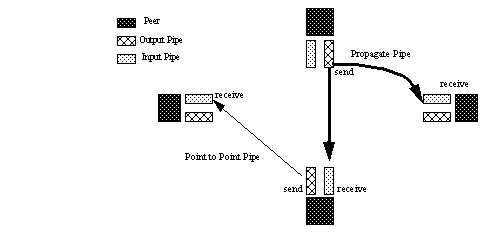

Copyright © 2001-2010 Sun Microsystems Inc.
Copyright © 2002, 2003, 2004 The Internet Society. All Rights Reserved.
This document and translations of it may be copied and furnished to others, and derivative works that comment on or otherwise explain it or assist in its implementation may be prepared, copied, published and distributed, in whole or in part, without restriction of any kind, provided that the above copyright notice and this paragraph are included on all such copies and derivative works. However, this document itself may not be modified in any way, such as by removing the copyright notice or references to the Internet Society or other Internet organizations, except as needed for the purpose of developing Internet standards in which case the procedures for copyrights defined in the Internet Standards process must be followed, or as required to translate it into languages other than English.
The limited permissions granted above are perpetual and will not be revoked by the Internet Society or its successors or assigns.
This document and the information contained herein is provided on an "AS IS" basis and THE INTERNET SOCIETY AND THE INTERNET ENGINEERING TASK FORCE DISCLAIMS ALL WARRANTIES, EXPRESS OR IMPLIED, INCLUDING BUT NOT LIMITED TO ANY WARRANTY THAT THE USE OF THE INFORMATION HEREIN WILL NOT INFRINGE ANY RIGHTS OR ANY IMPLIED WARRANTIES OF MERCHANTABILITY OR FITNESS FOR A PARTICULAR PURPOSE.
2006
|
Revision History |
||
|---|---|---|
|
Revision 1.2 |
June 22, 2001 |
goober@jxta.org, |
|
preliminary DocBook format |
||
|
Revision 1.2.2 |
September 22, 2001 |
goober@jxta.org |
|
first release based on DocBook format (no intended changes from 1.2 revision) |
||
|
Revision 1.2.3 |
November 20, 2001 |
bondolo@jxta.org |
|
Updates to the IDs chapter to document new IDs design. Information on components provided as part of reference implementations is also being moved to the reference implementation section (this may eventually be a separate document). |
||
|
Revision 1.2.4 |
November 20, 2001 |
|
|
Updates to Protocol chapter, discovery behavior and minor changes to the Resolver section. |
||
|
Revision 1.2.5 |
November 21, 2001 |
bondolo@jxta.org |
|
Updates to Advertisements chapter, added sections for ModuleClassAdvertisement, ModuleSpecAdvertisement, ModuleImplAdvertisement. Updated sections for PeerAdvertisement and PeerGroupAdvertisement. |
||
|
Revision 1.2.6 |
November 28, 2001 |
bondolo@jxta.org |
|
Updates to Advertisements chapter, added sections for PeerInfoAdvertisement. also includes typo corrections in various sections |
||
|
Revision 1.2.7 |
November 29, 2001 |
bondolo@jxta.org |
|
Updates to the Protocol Section, and more description on PeerInfoAdvertisement traffic field |
||
|
Revision 1.2.8 |
December, 2001 |
bondolo@jxta.org |
|
Integrated docbookized version of Eric's sections about enpoint service and router. Made some cosmetic fixes per last review. |
||
|
Revision 1.2.9 |
December 4, 2001 |
bondolo@jxta.org |
|
Updates to protocols chapter to use schemas to describe message structure more formally. Remove Peer Membership Protocol. Remove Content Advertisement (may be readded in documentation of CMS, but not part of or used by core protocols) Minor cosmetic improvements to copyright and ids chapter. |
||
|
Revision 1.2.10 |
December 7, 2001 |
bondolo@jxta.org |
|
Updates to protocols chapter to use mores schemas to describe message structure more formally. Examples for each as well. |
||
|
Revision 1.2.11 |
December 7, 2001 |
bondolo@jxta.org |
|
More updates to the protocols chapter. Converting raw program listings to figures and examples, addition of live cross references. Preparing for glossary and bibliography. |
||
|
Revision 1.2.12 |
December 9, 2001 |
bondolo@jxta.org |
|
More updates to the protocols chapter. PeerInfoProtocol and Pipe Binding Protocol now have schemas. Converting raw program listings to figures and examples, addition of live cross references. Preparing for glossary and bibliography. Cosmetic changes to Messages chapter |
||
|
Revision 1.2.13 |
December 17, 2001 |
bondolo@jxta.org |
|
Peer Info Protocol was redone because the previous schema though XML-like, was not representable with XML. (Endpoint Addresses as tag names were the culprit). PIP now looks more like the Peer Discovery Protocol with separate schemas for query and response. Document has been restructured into three major sections; Core Specification, Standard Services, and Reference Implementations. This restructuring makes understanding the JXTA Protocols more straight-forward because requirements and behaviours are now divided between functionality required by all JXTA peers, functionality needed to interoperate with the optional JXTA Protocols, and functionality required to interoperate with specific JXTA implementations. |
||
|
Revision 1.3 |
January 3, 2002 |
|
|
Wrote introductions for each of the new document sections. Introduced a glossary and bibliography. More restructuring of the source docbook files. Changes to prepare for a printable form document. |
||
|
Revision 1.3.1 |
January 9, 2002 |
bondolo@jxta.org |
|
Spelling and grammar corrections. More reorganization of material into core, standard services and reference implementation parts. Updating stylesheets and docbook usage based on techniques seen in other docbook projects. |
||
|
Revision 1.3.2 |
January 9, 2002 |
bondolo@jxta.org |
|
More moving content around into core and standard services. More chapters reorganized. New text in advertisments chapter. More bibliographic information. |
||
|
Revision 1.3.3 |
January 14, 2002 |
bondolo@jxta.org |
|
Redid the schemas for the advertisement chapter. Moved all of the protocol advertisements and schemas to the appropriate protocols chapters. Use of <literal> has now been replaced with <phrase> and a role attribute of rfc2119. Improved field descriptions for some of the core advertisements. |
||
|
Revision 1.3.4 |
February 13, 2002 |
bondolo@jxta.org |
|
Lots of minor revisions based on review cycle. Thanks to all of the reviewers who took time to review and respond! |
||
|
Revision 1.3.5 |
April 19, 2002 |
bondolo@jxta.org |
|
Redid some of the schema descriptions in a new and clearer style, more will be converted of over time. Redid schemas and examples for Pipe Binding Protocol section. A few changes to FO generation which generates muchbetter PDF output. Corrected a few specific issues pointed out by Brendon Wilson. |
||
|
Revision 1.3.6 |
June 10, 2002 |
bondolo@jxta.org |
|
More complete documentation of the Pipe Binding Protocol based upon review of the J2SE and C implementations. Partial re-write of the Messages chapter to flesh out some of the details. Remove text not specific to the protocol (mostly dealing with namespace ":" name). |
||
|
Revision 1.3.7 |
June 11, 2002 |
bondolo@jxta.org |
|
Minor corrections following review. Now has an "Abstract" section. |
||
|
Revision 1.3.8 |
June 18, 2002 |
bondolo@jxta.org |
|
Lots of corrections following a detailed review by Jeff Altman, with many more corrections to come! A bit of reorganisation of the messages chapter into two pieces. Some cleanups for TOC generation in the HTML version. Still working on SVG figures. Next release will be 1.4 upon completion of all the feedback cleanups. |
||
|
Revision 1.4 |
June 19, 2002 |
bondolo@jxta.org |
|
The Docbook source now validates against the Docbook 4.2 DTD. This seemingly minor issue fixed a number of problems with the HTML, PDF and rfc 2629 renderings and cross-referencing. Implemented all of the feedback from the most recent review cycle. Fixed a number of the figures. |
||
|
Revision 1.4.1 |
June 21, 2002 |
bondolo@jxta.org |
|
More revisions following careful review. This version is being released to coincide with the submission of the JXTA Specification as an Internet-Draft to IETF. |
||
|
Revision 1.4.2 |
October 10, 2002 |
bondolo@jxta.org |
|
Updates to Standard Transports sections. Updates to the Endpoint Routing Protocol and Endpoint Router Transport. Adds new optional SRDI message for Endpoint Resolver Protocol. Minor textual improvements and clarifications elsewhere. New examples and figures. |
||
|
Revision 2.0 |
February 27, 2003 |
bondolo@jxta.org |
|
Updates to Standard Transports sections. Clarifications in the IDs section. Updates to the Pipe Resolver protocol. Minor textual improvements and clarifications elsewhere. Added a section on "Users and Peers". Added a number of glossary terms. More contributions to the glossary are welcome. Updated version to "2.0". Rewrote or revised much of the Overview chapter. |
||
|
Revision 2.1.1 |
October 15, 2003 |
bondolo@jxta.org |
|
Additional updates to the Introduction and Overview chapters. Many additions to the glossary section. Minor schema corrections. |
||
|
Revision 2.2.1 |
April 10th, 2004 |
bondolo@jxta.org |
|
Additional updates to glossary and bibliography. Added updates to pipes regarding propagate pipes. |
||
|
Revision 2.3 |
June 30th, 2004 |
bondolo@jxta.org |
|
Additional information about the Rendezvous, Resolver and Pipe Services. |
||
|
Revision 2.3.5 |
September 20th, 2005 |
mathieu@jxta.org |
|
Homogeneous spec for Resolver queries and responses. |
||
|
Revision 2.5 |
June 23rd, 2006 |
bondolo@jxta.org |
|
Clarifications to the HTTP Message Transport. |
||
|
Revision 2.5.1 |
August 23rd, 2006 |
bondolo@jxta.org |
|
Corrections and clarifications to Route Advertisement and Pipe Resolver Message. |
||
|
Revision 2.5.2 |
January 9th, 2007 |
bondolo@jxta.org |
|
Corrections and clarifications from several sharp eyed readers. Now includes complete specification of Binary Message Format version 2 and specification of the endpoint SrcAddess and DstAddress message elements. |
||
|
Revision 2.5.3 |
October 16th, 2007 |
bondolo@jxta.org |
|
Additional glossary entries and other minor corrections. |
||
Abstract
The JXTA protocols defines a suite of six XML-based protocols that standardize the manner in which peers self-organize into peergroups, publish and discover peer resources, communicate, and monitor each other. The Endpoint Routing Protocol (ERP) is the protocol by which a peer can discover a route (sequence of hops) to send a message to another peer potentially traversing firewalls and NATs. The Rendezvous Protocol (RVP) is used for propagating a message within a peergroup. The Peer Resolver Protocol (PRP) is the protocol used to send a generic query to one or more peers, and receive a response (or multiple responses) to the query. The Peer Discovery Protocol (PDP) is used to publish and discover resource advertisements. The Peer Information Protocol (PIP) is the protocol by a which a peer may obtain status information about another peers. The Pipe Binding Protocol (PBP) is the protocol by which a peer can establish a virtual communication channel or pipe between one or more peers. The JXTA protocols permit the establishment a virtual network overlay on top of physical networks allowing peers to directly interact and organize independently of their network location and connectivity. The JXTA protocols have been designed to be easily implemented on unidirectional links and asymmetric transports.
List of Figures
List of Examples
The following conventions are used throughout this document.
The key words must, must not, required, shall, shall not, should, should not, recommended, not recommended, may, and optional in this document are to be interpreted as described in “IETF RFC 2119” RFC2119.
All strings and text found in the JXTA Protocols should be assumed to be encoded using Unicode USA28 Canonical UTF8 (NFC) (see Unicode Standard Annex #15 : Unicode Normalization Forms USA15) unless otherwise specified.
The JXTA Protocols comprise an open network computing platform designed for peer-to-peer (P2P) computing. The set of generalized JXTA protocols enable all connected devices on the network -- including cell phones, PDAs, PCs and servers -- to communicate and collaborate as peers. The JXTA protocols enable developers to build and deploy interoperable services and applications, further spring-boarding the peer-to-peer revolution on the Internet.
The JXTA protocols standardize the manner in which peers:
Discover each other
Self-organize into peer groups
Advertise and discover network resources
Communicate with each other
Monitor each other
The JXTA protocols are designed to be independent of the underlying implementation. In particular, the JXTA protocols do not:
Require the use of any particular computer language or operating system.
Require the use of any particular network transport or topology.
Require the use of any particular authentication, security or encryption model.
JXTA provides a simple and generic P2P platform with all the basic functions necessary to host all types of network services:
JXTA is defined by a small number of protocols. Each protocol is easy to implement and integrate into P2P services and applications. Thus, service offerings from one vendor can be used transparently by the user community of another vendor's system.
The JXTA protocols are defined to be independent of programming languages, so that they can be implemented in C/C++, Java, Perl, and numerous other languages. Heterogeneous devices with completely different software stacks can interoperate using the JXTA protocols.
The JXTA protocols are designed to be independent of transport protocols. They can be implemented on top of TCP/IP, HTTP, Bluetooth, HomePNA, and many other protocols.
The JXTA protocols are a set of six protocols that have been specifically designed for ad hoc, pervasive, and multi-hop peer-to-peer (P2P) network computing. Using the JXTA protocols, peers can cooperate to form self-organized and self-configured peer groups independent of their positions in the network (edges, firewalls, network address translators, public vs. private address spaces), and without the need of a centralized management infrastructure.
The JXTA protocols are designed to have very low overhead, make few assumptions about the underlying network transport and impose few requirements on the peer environment, and yet are able to be used to deploy a wide variety of P2P applications and services in a highly unreliable and changing network environment.
Peers use the JXTA protocols to advertise their resources and to discover network resources (services, pipes, etc.) available from other peers. Peers form and join peer groups to create special relationships. Peers cooperate to route messages allowing for full peer connectivity. The JXTA protocols allow peers to communicate without the need to understand or manage the potentially complex and dynamic network topologies which are increasingly common.
The JXTA protocols allow peers to dynamically route messages across multiple network hops to any destination in the network (potentially traversing firewalls). Each message carries with it either a complete or partially ordered list of gateway peers through which the message might be routed. Intermediate peers in the route may assist the routing by using routes they know of to shorten or optimize the route a message is set to follow.
The JXTA protocols are composed of six protocols that work together to allow the discovery, organization, monitoring and communication between peers:
Peer Resolver Protocol (PRP) is the mechanism by which a peer can send a query to one or more peers, and receive a response (or multiple responses) to the query. The PRP implements a query/response protocol. The response message is matched to the query via a unique id included in the message body. Queries can be directed to the whole group or to specific peers within the group.
Peer Discovery Protocol (PDP) is the mechanism by which a peer can advertise its own resources, and discover the resources from other peers (peer groups, services, pipes and additional peers). Every peer resource is described and published using an advertisement. Advertisements are programming language-neutral metadata structures that describe network resources. Advertisements are represented as XML documents.
Peer Information Protocol (PIP) is the mechanism by a which a peer may obtain status information about other peers. This can include state, uptime, traffic load, capabilities, and other information.
Pipe Binding Protocol (PBP) is the mechanism by which a peer can establish a virtual communication channel or pipe between one or more peers. The PBP is used by a peer to bind two or more ends of the connection (pipe endpoints). Pipes provide the foundation communication mechanism between peers.
Endpoint Routing Protocol (ERP) is the mechanism by which a peer can discover a route (sequence of hops) used to send a message to another peer. If a peer “A”wants to send a message to peer “C”, and there is no known direct route between “A”and “C”, then peer “A”needs to find intermediary peer(s) who will route the message to “C”. ERP is used to determine the route information. If the network topology changes and makes a previously used route unavailable, peers can use ERP to find an alternate route.
Rendezvous Protocol (RVP) is the mechanism by which peers can subscribe or be a subscriber to a propagation service. Within a peer group, peers can be either rendezvous peers or peers that are listening to rendezvous peers. The Rendezvous Protocol allows a peer to send messages to all the listening instances of the service. The RVP is used by the Peer Resolver Protocol and by the Pipe Binding Protocol in order to propagate messages.
All of these protocols are implemented using a common messaging layer. This messaging layer is what binds the JXTA protocols to various network transports. (see Messages)
Each of the JXTA protocols is independent of the others. A peer is not required to implement all of the JXTA protocols to be a JXTA peer. A peer only implements the protocols that it needs to use. For example:
A device may have all the necessary advertisements it uses pre-stored in memory, and therefore not need to implement the Peer Discovery Protocol.
A peer may use a pre-configured set of router peers to route all its messages. Because the peer just sends messages to the known routers to be forwarded, it does not need to fully implement the Endpoint Routing Protocol.
A peer may not need to obtain or wish to provide status information to other peers, hence the peer might not implement the Peer Information Protocol.
Each peer must implement two protocols in order to be addressable as a peer: the Peer Resolver Protocol and the Endpoint Routing Protocol. These two protocols and the advertisements, services and definitions they depend upon are known as the JXTA Core Specification. The JXTA Core Specification establishes the base infrastructure used by other services and applications.
The remaining JXTA protocols, services and advertisements are optional. JXTA implementations are not required to provide these services, but are strongly recommended to do so. Implementing these services provides greater interoperability with other implementations and broader functionality. These common JXTA services are known as the JXTA Standard Services.
+------------------------+ +------------------------+ | +------------------+ | | +------------------+ | | | Peer Information | <-------> | Peer Information | | | +------------------+ | | +------------------+ | | | | | | +------------------+ | | +------------------+ | | | Peer Rendezvous | <-------> | Peer Rendezvous | | | +------------------+ | | +------------------+ | | | | | | +------------------+ | | +------------------+ | | | Pipe Binding | <-------> | Pipe Binding | | | +------------------+ | | +------------------+ | | | | | | +------------------+ | | +------------------+ | | | Peer Discovery | <-------> | Peer Discovery | | | +------------------+ | | +------------------+ | |Peer | |Peer | +------------------------+ +------------------------+ +------------------------+ +------------------------+ | +------------------+ | | +------------------+ | | | Peer Resolver | <-------> | Peer Resolver | | | +------------------+ | | +------------------+ | | | | | | +------------------+ | | +------------------+ | | | Endpoint Routing | <-------> | Endpoint Routing | | | +------------------+ | | +------------------+ | |Endpoint | |Endpoint | +------------------------+ +------------------------+ +------------------------+ +------------------------+ | Transport | | Transport | +------------------------+ +------------------------+
A peer may decide to cache advertisements discovered via the Peer Discovery Protocol for later usage. It is important to point out that caching is not required by the JXTA architecture, but caching can be an important optimization. By caching advertisements, a peer avoids the need to perform a new discovery each time it accesses a network resource. In highly-transient environment, performing the discovery is the only viable solution. In static environments, caching is more efficient.
A unique characteristic of P2P networks, like JXTA, is their ability to spontaneously replicate information toward end-users. Popular advertisements are likely to be replicated more often, making them easier to find as more copies become available. Peers do not have to return to the same peer to obtain the advertisements they seek. Instead of querying the original source of an advertisement, peers may query neighboring peers that have already cached the information. Each peer may potentially become an advertisement provider to any other peer.
The JXTA protocols have been designed to allow JXTA to be easily implemented on uni-directional links and asymmetric transports. In particular, many forms of wireless networking do not provide equal capability for devices to send and receive. JXTA permits any uni-directional link to be used when necessary, improving overall performance and network connectivity in the system. The intent is for the JXTA protocols to be as pervasive as possible, and easy to implement on any transport. Implementations on reliable and bi-directional transports such as TCP/IP or HTTP should lead to efficient bi-directional communications.
The JXTA uni-directional and asymmetric transport also plays well in multi-hop network environments where the message latency may be difficult to predict. Furthermore, peers in a P2P network tend to have nondeterministic behaviours. They may join or leave the network on a very frequent basis.
The JXTA Project is logically divided in three layers.
Platform. This layer encapsulates minimal and essential primitives that are common to P2P networking, including peers, peer groups, discovery, communication, monitoring, and associated security primitives. This layer is ideally shared by all P2P devices so that interoperability becomes possible.
Services. This layer includes network services that may not be absolutely necessary for a P2P network to operate but are common or desirable for P2P environments. Examples of network services include search and indexing, directory, storage systems, file sharing, distributed file systems, resource aggregation and renting, protocol translation, authentication and PKI services.
Applications. This layer includes P2P instant messaging, entertainment content management and delivery, P2P E-mail systems, distributed auction systems, and many others. Obviously, the boundary between services and applications is not rigid. An application to one customer can be viewed as a service to another customer.
This section is a guide to the assumptions that shape the JXTA design. There are two types of assumptions stated here: those which describe the requirements of JXTA implementations and those which describe the expected behaviour of the JXTA network.
A peer shall not make assumptions about the runtime environments or programming languages in use by another peer. The network of peers reachable by any peer is likely to contain many peers with heterogeneous implementations and capabilities.
A peer should assume that the capabilities and complexity of the network peers supporting these protocols can range from a single light switch to a highly-available supercomputer cluster.
A peer must implement the JXTA protocols such that all interaction with other peers is correct and conformant.
A peer may implement only the JXTA protocols it requires for correct and conformant interaction with other peers.
A peer may choose to partially implement protocols if unimplemented portions will never be used. (e.g. it may implement client-side or server-side portions only.)
Peers wishing to interact with other peers within the JXTA network should be willing to participate fully in the protocols. In particular, peers should cache advertisements and forward messages for other peers in the JXTA network. However, this participation is optional.
The JXTA protocols may be deployed over a wide variety of network configurations including the Internet, corporate intranets, a dynamic proximity network, or in a home networking environment. Applications should avoid assumptions about the underlying network environment.
Peers receiving a corrupted or detectably compromised message must discard the message. Messages may be corrupted or intentionally altered during network transmission.
Peers may appear, disappear and migrate at any time without notice. In particular, the JXTA protocols support very arbitrary environment changes allowing a peer to dynamically discover and reconnect to its changing environment.
The communication path between any pair of peers may at times not work equally well in both directions. That is, communications between two peers will in many cases be able to operate bi-directionally, but at times the connection between two peers may be only uni-directional, allowing one peer to successfully send messages to the other while no communication is possible in the reverse direction.
The JXTA protocols are defined as idempotent protocol exchanges. The same messages may be sent/received more than once during the course of a protocol exchange. No protocol states are required to be maintained at both ends.
Due to unpredictability of P2P networks, assumptions must not be made about the time required for a message to reach a destination peer. The JXTA Core Protocols must not impose any timing requirements for message receipt.
The JXTA Transport Protocols (see Core JXTA Message Transport Bindings and Standard JXTA Message Transports) must not impose any timing requirements on the JXTA Core Protocols, but may have timing requirements internal to themselves.
The Standard Protocols (e.g. Peer Discovery Protocol, Peer Information Protocol, Peer Discovery Protocol, etc.) and application defined protocols may impose timing requirements on message delivery and receipt.
A JXTA protocol message which is routed through multiple hops should not be assumed to reliably delivered, even if only reliable transports such as TCP/IP are used through all hops. A congested peer may drop messages at any time rather than routing them.
JXTA protocol messages and advertisements are defined using XML and are required to be well-formed XML documents. The use of a full XML parser is optional as long as the requirements of the being well-formed and the JXTA protocol are met. Small JXTA implementations may choose to use pre-built XML or XML templates for message and advertisement construction.
The JXTA protocols must not require a broadcast or multicast capability of the underlying network transport. Messages intended for receipt by multiple peers (propagation) may be implemented using point-to-point communications.
A peer should make the assumption that if a destination address is not available at any time during the message transmission, the message will not be delivered.
A peer must not assume that there is a guaranteed return route to a peer from which it has received communication. The lack of a return route may either be temporary or permanent.
Each peer must be a member of the World Peergroup and Net Peergroups. Membership in these groups is automatic.
Peers must be members of the same peer group in order to exchange messages.
Names are not unique unless a coordinated naming service is used to guarantee name uniqueness. A naming service is typically a service that guarantees, within a given scope, the uniqueness of name and can be used to register name mapping. Examples of name services are DNS and LDAP. A naming service is optional. JXTA does not define its own naming service.
Once content has been published to the JXTA network, it should not be assumed that that the content can be later retrieved from the JXTA network. The content may be available only from peers that are not currently reachable.
Once a content has been published to the JXTA network, it must not be assumed that the content can be deleted. Republication of content by peers is unrestricted and the content may propagate to peers which are not reachable from the publishing peer.
JXTA is intended to be a small system with a limited number of concepts at its core. This chapter introduces the concepts which are central to JXTA.
A JXTA peer is any networked device (sensor, phone, PDA, PC, server, supercomputer, etc.) that implements the core JXTA protocols. Each peer is identified by a unique ID. Peers are autonomous and operate independently and asynchronously of all other peers. Some peers may have dependencies upon other peers due to special requirements such as the need for gateways, proxies, or routers.
Peers may publish network services and resources ( CPU, storage, databases, documents, etc.) for use by other peers. A peer may cache advertisements for JXTA resources, but doing so is optional. Peers may have persistent storage.
Peers are typically configured to spontaneously discover each other on the network to form transient or persistent relationships with other peers. Peers that provide the same set of services tend to be interchangeable. As a result, peers typically need to interact with only a small number of other peers (network neighbors or buddy peers). Peers should not make assumptions about the reliability of other peers. Peers may join or leave the network at any time. A peer should always anticipate that connectivity may be lost to any peer that it is currently communicating with.
Peers may advertise multiple network interfaces. Each published interface is advertised as a peer endpoint. A peer endpoint is a URI that uniquely identify a peer network interface (for example, a URI might specify a TCP port and associated IP address). Peer endpoints are used by peers to establish direct point-to-point connections between two peers.
Communicating peers are not required to have direct point-to-point network connection between themselves. A peer may need to use one or more intermediary peers to route a message to another peer that is separated due to physical network connections or network configurations (e.g., NATs, firewalls, or proxies).
There is no explicit relationship between users and peers within JXTA, but for many applications the two concepts are closely related.
Frequently a peer will be under the control of a human operator, the “user”, and will interact with the network on the basis of the user's direction. However, not every peer has an associated user. Many peers exist to provide services and resources to the network, but are not associated with any user. Examples include devices such as sensors and printers, and services such as databases.
The concept of “user” exists primarily for identification: some applications may need to allow users to tell each other apart and to manage their interactions. Identity is also frequently tied to security and permissions.
Peers self-organize into Peer Groups. A peer group is a collection of peers that have a common set of interests. Each peer group is uniquely identified by a PeerGroup Id. The JXTA protocols do not dictate when, where, or why peer groups are created. The JXTA protocols only describe how peers may publish, discover, join, and monitor peer groups.
JXTA recognizes three common motivations for creating peer groups:
To create a secure environment. Peer group boundaries permit member peers to access and publish protected contents. Peer groups form logical regions whose boundaries limit access to the peer group resources. A peer group does not necessarily reflect the underlying physical network boundaries such as those imposed by routers and firewalls. Peer groups virtualize the notion of routers and firewalls, subdividing the network into secure regions without respect to actual physical network boundaries.
To create a scoping environment. Peer groups are typically formed and self-organized based upon the mutual interest of peers. No particular rules are imposed on the way peer groups are formed, but peers with the same interests will tend to join the same peer groups. Peer groups serve to subdivide the network into abstract regions providing an implicit scoping mechanism. Peer group boundaries define the search scope when searching for a group's content.
To create a monitoring environment. Peer groups permit peers to monitor a set of peers for any special purpose, including heartbeat, traffic introspection, and accountability.
A peer group provides a set of services called peer group services. JXTA defines a core set of peer group services, and the JXTA protocols specify the wire format for these services. Additional peer group services can be developed for delivering specific services. For example, a lookup service could be implemented to find active (running on some peer) and inactive (not yet running) service instances. The core peer group services are:
Not all the above services must be implemented by a peer group. A peer group can implement only the services it finds useful and rely on the default Net Peergroup to provide generic implementations of other services.
Each service may implement one or more of the JXTA protocols, the specifications for which are the main content of this document. A service will typically implement one protocol for simplicity and modularity reasons, but some services may not implement any protocols.
Peers cooperate and communicate to publish, discover and invoke network services. A peer can publish as many services as it can provide. Peers discover network services via the Peer Discovery Protocol.
Network Service specifications are beyond the scope of this document. Upcoming standards such as WSDL, ebXML, SOAP, UPnP might be used within a JXTA Network.
The JXTA protocols recognize two levels of network services:
Peer Services
Peer Group Services
A peer service is accessible only on the peer that is publishing the service. If that peer happens to fail, then the service also fails. Multiple instances of the service can be run on different peers, but each instance publishes its own advertisement.
A peer group service is composed of a collection of instances (potentially cooperating with each other) of the service running on multiple members of the peer group. If any one peer fails, the collective peer group service is not affected: in most cases, the service is still available from another peer member. Peer group services are published as part of the peer group advertisement.
Services can either be pre-installed into a peer or loaded from the network. The process of finding, downloading and installing a service from the network is similar to performing a search on the internet for a web page, retrieving the page, and then installing the required plug-in. In order to actually run a service, a peer may need to locate an implementation suitable for the peer's runtime environment. Multiple implementations of the same service may allow Java peers to use Java code implementations, and native peers to use native code implementations.
Service invocation is outside the scope of JXTA. JXTA is designed to interoperate and be compatible with any Web service standards: WSDL, uPnP, RMI, etc. The JXTA protocols define a generic framework to publish and discover advertisements that may describe services. Peers publish and discover advertisements via the Peer Discovery Protocol. An advertisement for a service typically contains all necessary information to either invoke or instantiate the service being described. The JXTA protocols define Module Advertisements, but any other form of service description may be introduced.
JXTA-Enabled services are services that are published using a ModuleSpecAdvertisement. A ModuleSpecAdvertisement may specify a pipe advertisement that can be used by a peer to create output pipes to invoke the service. ModuleSpecAdvertisements may be extended in the future to contain a list of pre-determined messages that can be sent by a peer to interact with the service. A ModuleSpecAdvertisement may also contain references to two other services that can be used as an authenticator for the service and as a local proxy for the service.
Each JXTA-enabled service is uniquely identified by its ModuleSpecID.
Peers, peer groups, pipes, contents, and other resources need to be uniquely identifiable within the JXTA protocols. A JXTA ID uniquely identifies an entity and serves as a canonical means of referring to that entity.
URNs are used for the expression of JXTA IDs.
All network resources, such as peers, peer groups, pipes and services, are represented by advertisements. Advertisements are JXTA's language neutral metadata structures for describing resources. The JXTA Core Specification and Standard Services define, among others, the following advertisement types:
Peer Advertisement
PeerGroup Advertisement
ModuleClass Advertisement
ModuleSpec Advertisement
ModuleImpl Advertisement
Pipe Advertisement
Rendezvous Advertisement
The complete specification of advertisements is given in the Advertisements chapter. Because the JXTA protocols make heavy reference to these advertisements, the reader should be familiar with advertisements before moving on to the protocol specification chapters. Advertisements are, by far, the most common document exchanged in the protocol messages.
Advertisments are published with a lifetime that specifies the availability of the resource. An advertisement can be republished to extend the lifetime of a resource.
Services and peer implementations can create their own advertisement types, either from scratch or by subtyping the existing types.
The need to support different levels of resource access in a dynamic and ad hoc P2P network leads to a role-based trust model in which an individual peer acts under the authority granted to it by another trusted peer to perform a particular task. Peer relationships may change quickly and the policies governing access control need to be flexible in allowing or denying access.
Four basic security requirements must be provided:
The structure of JXTA messages enables JXTA applications to add arbitrary metadata information, such as credentials, digests, certificates, and public keys, to messages. Message digests guarantee the data integrity of messages. Messages may also be encrypted and signed for confidentiality and refutability. Credentials can be used to provide message authentication and authorization.
A credential is a token that, when presented in a message body, is used to identify a sender and can be used to verify that sender's right to send the message to the specified endpoint. The credential is an opaque token that must be presented each time a message is sent. The sending address placed in the message envelope is cross-checked with the sender's identity in the credential. Each credential's implementation is specified as a plug-in configuration, which allows multiple authentication configurations to co-exist on the same network.
It is the intent of the JXTA protocols to be compatible with widely accepted transport-layer security mechanisms. Some JXTA implementations contain a virtualized TLS implementation that allows it to secure endpoint-to-endpoint communications regardless of the number of hops required to deliver each message.
TLS and IPSec could also be used as JXTA transports. However, when used as transports they provide integrity and confidentiality of message transfer only between the two communicating peers.
Pipes are virtual communication channels used to send and receive messages between services or applications. Pipes provide the illusion of a virtual in and out mailbox that is independent of any single peer location, and independent of network topology (multi-hops route).
Different quality of services can be implemented by a pipe. For example:
The uni-directional asynchronous pipe is required by the JXTA protocols. Other pipe variations may be implemented for use by services and their associated protocols.
Pipes provide a network abstraction over the peer endpoint transport. Peer endpoints correspond to the available peer network interfaces that can be used to send and receive data from another peer. Pipes connect one or more peer endpoints. At each endpoint software to send or receive, as well as to manage associated pipe message queues or streams, is assumed, but message queues are optional.
The pipe endpoints are referred to as input pipes (receiver) and output pipes (transmitter). Pipe endpoints are dynamically bound to a peer endpoint at runtime, via the Pipe Binding Protocol. The pipe binding process consists of searching for and connecting the two or more endpoints of a pipe.
When a message is sent into an output pipe, the message is sent by the local peer endpoint to the peer endpoint(s) where the associated input pipe is located. The set of peer endpoints currently associated with the input pipes is discovered using the Pipe Binding Protocol.
A pipe offers two modes of communication:

Pipes may connect two peers that do not have a direct physical link. In this case, one or more intermediary peer endpoints are used to route messages between the two pipe endpoints.
The information transmitted using pipes and between endpoints is packaged as messages. Messages define an envelope to transfer any kind of data. A message may contain an arbitrary number of named sub-sections which can hold any form of data.
It is the intent that the JXTA protocols be compliant with W3C XML Protocol standards, so that the JXTA protocols can be implemented on XML transports such as SOAP, XML-RPC, etc.
The JXTA protocols are specified as a set of XML messages exchanged between peers. Each software platform binding describes how a message is converted to and from a native data structures such as Java objects or “C” structures.
The use of XML messages to define protocols allows many different kinds of peers to participate in a protocol. Each peer is free to implement the protocol in a manner best suited to its abilities and role.
The JXTA protocols assume that many types of
contents may be shared, exchanged, and replicated between peers. A
content can be a text file, a structured document (like a PDF or an
XML file), a Java .jar
or loadable library, code or even an executable process. No size
limitation is assumed.
Content are published and shared amongst peer members of a peer group. When a content is shared within the JXTA network it is associated with a JXTA ID. The combination of a content and a JXTA ID is known as a Codat. A codat may belong to only one peer group. If the same content must be published in two different peer groups, two different codats are created. The two codats may, of course, represent the same content.
Each codat is uniquely identified by a JXTA ID. All codats make their existence known to peer members by publishing a content advertisement.
A codat instance is a copy of a codat. Each codat copy may be replicated on different peers in the peer group. Each copy has the same codat id and an identical content.
Replicating codats within a peer group helps to ensure that each item of content is more readily available. For example, if an item has two instances residing on two different peers, only one of the peers needs to be alive to respond to the content request.
The JXTA protocols do not specify how codats are replicated. This decision is left to higher-level content service managers.
JXTA is designed to be a small system with only a few required components and behaviours. The functionality that is required of all implementations is defined by the JXTA Core Specification and is documented in this section. Implementations that wish to be JXTA compliant must implement all of the JXTA Core Specification.
Implementation of the JXTA Core Specification does not guarantee or even necessarily provide interoperability with other JXTA implementations. There are a number of types of components and behaviours which need to be provided by JXTA implementation which are not part of the JXTA Core Specification. Existing implementations of these components are described separately in JXTA Standard Services and JXTA Reference Implementations Information. In order for a JXTA implementation to be interoperable with other implementations it may be necessary to implement some of the components described there.
Table of Contents
The JXTA protocols often need to refer to peers, peer groups, pipes and other JXTA resources. These references are presented in the protocols as JXTA IDs. JXTA IDs are a means for uniquely identifying specific peer groups, peers, pipes, codat and service instances. JXTA IDs provide unambiguous references to the various JXTA entities. There are six types of JXTA entities which have JXTA ID types defined: peergroups, peers, pipes, codats, module classes and module specifications. Additional JXTA ID types may be defined in the future.
JXTA IDs are normally presented as URNs. URNs are a form of URI that “... are intended to serve as persistent, location-independent, resource identifiers”. Like other forms of URI, JXTA IDs are presented as text. See “IETF RFC 2141” RFC2141 for more information on URNs.
Every JXTA ID, regardless of format or type has the following properties:
Unambiguous. It must be a complete reference to the resource.
Relatively Unique. A JXTA ID must refer to a single resource.
Canonical. References to the same resource should encode to the same JXTA ID. This enables JXTA IDs to be compared to determine if they refer to the same resource, but understandably may not be achievable by all ID Formats.
Opaque. In their URN presentation JXTA IDs should be assumed to be opaque. The context of an ID within a protocol message generally is sufficient to establish its type. A JXTA binding may be able to interpret an ID if it supports the ID Format. Generally, only the immediate participants in a JXTA protocol need to understand the contents of a JXTA ID, if at all.
When JXTA IDs are used within protocols they are manipulated as text string URIs. There are three operations available for URIs; compare, resolve, decompose. JXTA ID URIs are comparable for equality as strings. JXTA ID URIs can also be resolved to the resource they reference. Finally, JXTA ID URIs can optionally be decomposed and interpreted by JXTA bindings. In order to interpret a JXTA ID, a JXTA binding must support the JXTA ID Format used by that JXTA ID. For many JXTA protocols and operations it is not necessary to decompose the JXTA IDs.
A JXTA ID is a standard URN in the JXTA ID
namespace. JXTA ID URNs are identified by the URN namespace
identifier jxta.
Each JXTA ID URN also contains a JXTA ID Format keyword. The ID
Format keyword indicates how the ID was created and may also allow
JXTA bindings to extract additional information from the ID.
Two ID formats have been defined which are
identified by the jxta
and uuid
keywords. It is possible to define additional JXTA ID Formats in
order to refer to resources both within JXTA and to bridge to other
technologies.
The following examples demonstrate valid JXTA ID presentation forms. These examples are not necessarily valid JXTA IDs.
A. urn:jxta:idform-1234567890
B. URN:jxta:idform-1234567890
C. urn:JXTA:idform-1234567890
D. urn:JXTA:IDForm-1234567890
E. urn:jxta:idform2-ABCDEFG
F. urn:jxta:idform3-31:08:66:42:67:::91:24::73
In the preceding examples, A., B. and C. represent
the same JXTA ID. Both the URN
portion and the JXTA
are case insensitive. Example D. is not equivalent to any of A., B.
or C. because the data portion of the URN is case sensitive. In the
six examples, four different JXTA ID Formats are used: “idform”,
“IDForm”, “idform2” and “idform3”.
Definition of ID Format names that differ only in character case is
not recommended. The interpretation of the characters following the
“-” is specific to each ID Format.
JXTA IDs are presented as URNs of the jxta
namespace. The JXTA ID Namespace specifies additional restrictions
upon the format of the URN. These requriements are detailed in JXTA
ID ABNF. The following figure uses the ABNF syntax as defined in
“IETF RFC 2234” RFC2234.
<JXTAURN> ::= "urn:" <JXTANS> ":" <JXTAIDVAL>
<JXTANS> ::= "jxta"
<JXTAIDVAL> ::= <JXTAFMT> "-" <JXTAIDUNIQ>
<JXTAFMT> ::= 1 * <URN chars>
<JXTAIDUNIQ> ::= 1 * <URN chars>
<URN chars> ::= <trans> | "%" <hex> <hex>
<trans> ::= <upper> | <lower> | <number> | <other> |
<reserved>
<upper> ::= "A" | "B" | "C" | "D" | "E" | "F" | "G" | "H" |
"I" | "J" | "K" | "L" | "M" | "N" | "O" | "P" |
"Q" | "R" | "S" | "T" | "U" | "V" | "W" | "X" |
"Y" | "Z"
<lower> ::= "a" | "b" | "c" | "d" | "e" | "f" | "g" | "h" |
"i" | "j" | "k" | "l" | "m" | "n" | "o" | "p" |
"q" | "r" | "s" | "t" | "u" | "v" | "w" | "x" |
"y" | "z"
<hex> ::= <number> | "A" | "B" | "C" | "D" | "E" | "F" |
"a" | "b" | "c" | "d" | "e" | "f"
<number> ::= "0" | "1" | "2" | "3" | "4" | "5" | "6" | "7" |
"8" | "9"
<other> ::= "(" | ")" | "+" | "," | "-" | "." |
":" | "=" | "@" | ";" | "$" |
"_" | "!" | "*" | "'"
<reserved> ::= "%" | "/" | "?" | "#"
The jxta URN namespace does not currently define
any special symbols from the reserved
set.
JXTA IDs are designed to support multiple ID Formats. ID Formats allow JXTA developers to utilize existing naming and ID schemes within JXTA. In the JXTA ID presentation, the ID's “Format” follows the JXTA URN namespace. Any JXTA ID Format which follows the general requirements for URNs and the JXTA ID Properties will be usable by conformant JXTA implementations.
JXTA IDs may refer to many types of resources; pipes, peers, etc. Each JXTA ID format type may support references to one or more of these resource types. Currently, five standard resource types have been identified; peer groups, peers, pipes, content and service instances. Other types may be defined.
Each of the individual ID Types may provide additional requirements specific to its type.
Peer Group IDs refer to peer groups. A peer group ID should canonically, uniquely and unambiguously refer to a peer group. Every ID Format must support this ID Type because all of the other ID Types refer to the peer group to which they belong. Every ID Format must support encoding of the World Peer Group. Support for other peer groups is optional. Example: You are defining an ID Format for Peer IDs based upon driver's license number. Driver's licenses are not organized into groups. This can be considered equivalent to all driver's licenses belonging to the same group, the global “world peer group”.
Peer IDs refer to peers. A Peer ID should canonically, uniquely and anambiguously refer to a peer. Support for this ID Type is optional. If a JXTA binding recognizes the ID Format, it should be able to determine the assocaiated Peer Group ID from a Peer ID. This Peer Group ID identifies the peer group of which the peer is a member.
Codat IDs refer to codats. A Codat ID should canonically, uniquely and anambiguously refer to a codat. Support for this ID Type is optional. If a JXTA binding recognizes the ID Format, it should be able to determine the assocaiated Peer Group ID from a Codat ID. This Peer Group ID identifies the peer group of which the codat is a member.
Pipe IDs refer to pipes. A Pipe ID should canonically, uniquely and anambiguously refer to a pipe. Support for this ID Type is optional. If a JXTA binding recognizes the ID Format, it should be able to determine the assocaiated Peer Group ID from a Pipe ID. This Peer Group ID identifies the peer group of which the pipe is a member.
A Module Class ID identifies a particular local behavior, that is, a specific API for each execution environment for which an implementation exists. A Module Class ID should canonically, uniquely and unambiguously refer to a module class as defined by an advertisement. Support for this ID Type is optional. If a JXTA binding recognizes the ID Type, it should be able to extract a Base Class ID from a Module Class ID. The Base Class ID allows applications to determine if two Module Class IDs differ only in the “role” they perform. Module Spec ID's “roles” allow for the same module to be reused within a group and have instances distinguished. This is necessary when, for example, a common database service is used, with each “role” accessing a different data set.
A ModuleSpecID uniquely identifies a particular network behavior (wire protocol and choreography) that may be embodied by a Jxta Module. There may be any number of implementations of a given Module Spec ID. A ModuleSpecID uniquely identifies an abstract module for which there may be multiple platform specific implementations. A ModuleSpecID is used to locate a compatible implementation such that it can be instantiated. All such implementations are assumed to be network compatible. A Module Spec ID should canonically, uniquely and unambiguously refer to a module specification. Support for this ID Type is optional. If a JXTA binding recognizes the ID Type, it should be able to extract a Module Class ID from a Module Spec ID.
The “jxta” ID Format is a required ID Format that is used for encoding “well known” JXTA identifiers. All JXTA binding implementations must support this ID Format. There are three special reserved JXTA IDs; the Null ID, the World Peer Group ID and the Net Peer Group ID. The “jxta” ID Format exists so that for these few “well known” IDs only a single representation exists.
Figure 1.2. JXTA ID : "jxta" ID Format ABNF
<JXTAJXTAURN> ::= "urn:" <JXTANS> ":" <JXTAJXTAFMT> "-"
<JXTAJXTAFMTID>
<JXTAJXTAFMT> ::= "jxta"
<JXTAJXTAFMTID> ::= <JXTANULL> | <JXTAWORLDGROUP> | <JXTANETGROUP>
<JXTANULL> ::= "Null"
<JXTAWORLDGROUP> ::= "WorldGroup"
<JXTANETGROUP> ::= "NetGroup"
Advertisements are meta-data documents used by JXTA protocols to describe resources. Advertisements are used to describe peers, peer groups, pipes, content, services and many other types of resources. JXTA Advertisements are presented in XML. Many of the JXTA protocols depend on Advertisements to provide necessary information. JXTA protocols are used to pass Advertisements between peers.
Services can define new Advertisement types by sub-typing existing Advertisement types or by defining completely new Advertisements. Advertisement sub-types allow for additional information to be provided as well as richer meta-data.
Advertisements are composed of a series of hierarchically arranged elements. The elements may appear in any order within the advertisement. Each element can contain its data or additional elements. An element can also have attributes. Attributes are name-value string pairs. An attribute is used to store meta-data, which helps to describe the data within the element.
The Core JXTA Protocols rely on the following advertisements:
All JXTA advertisements are represented in XML. XML provides a powerful means of representing data and metadata throughout a distributed system. XML provides a universal (software-platform neutral) representation:
XML is programming language agnostic
XML is self-describing
XML content can be strongly-typed
XML ensures correct syntax
These advantages allow peers to manage and use Advertisements safely and to be able to ensure correct interactions with other peers. The Advertisements defined by the JXTA Core Specificationand the JXTA Standard Servicesare specified using the XML Schema Definition Language XSD2001-1 XSD2001-2. Use of XML Schemas allows the advertisement contents to be strongly type-checked and semanticly validated beyond the syntactical validation provided by XML with DTDs. Service and protocol authors are recommendedto specify their Advertisements or Advertisement sub-types using XML Schema Language. DTDs are normally prepared from the schema descriptions for use in environments which do not support XML schema.
The other powerful feature of XML is its ability to be translated into other encodings such as HTML and WML. This feature allows peers that do not support XML to access advertised resources.
Figure 2.1. Common Advertisement Fragments Schemas
<xs:simpleType name="JXTAID">
<xs:restriction base="xs:anyURI">
<xs:pattern value="([uU][rR][nN]:[jJ][xX][tT][aA]:).+\-.+"/>
</xs:restriction>
</xs:simpleType>
<xs:complexType name="serviceParam">
<xs:sequence>
<xs:element name="MCID" type="jxta:JXTAID"/>
<xs:element name="Parm" type="xs:anyType"/>
</xs:sequence>
</xs:complexType>
<xs:complexType name="Cred">
<xs:all>
</xs:all>
</xs:complexType>
A Peer Advertisement describes a peer and the resources it provides to the group. The Peer Advertisement holds specific information about the peer such as its its unique id, its group id and optionally its name and descriptive information. It may also contain endpoint addresses and any run-time attributes that individual peer services want to publish (such as being a rendezvous peer for a group).
Figure 2.2. Peer Advertisement Schema
<xs:element name="PA" type="jxta:PA"/>
<xs:complexType name="PA">
<xs:sequence>
<xs:element name="PID" type="JXTAID"/>
<xs:element name="GID" type="JXTAID"/>
<xs:element name="Name" type="xs:string" minOccurs="0"/>
<xs:element name="Desc" type="xs:anyType" minOccurs="0"/>
<xs:element name="Svc" type="jxta:serviceParams" minOccurs="0" maxOccurs="unbounded"/>
<xs:sequence>
</xs:complexType>
<PID>
<GID>
<Name>
<Desc>
<Svc>
A Peer Group Advertisement describes peergroup specific resources: name, group id, description, specification, and service parameters.
Figure 2.3. Peer Group Advertisement Schema
<xs:element name="PGA" type="jxta:PGA"/>
<xs:complexType name="PGA">
<xs:sequence>
<xs:element name="GID" type="jxta:JXTAID"/>
<xs:element name="MSID" type="jxta:JXTAID"/>
<xs:element name="Name" type="xs:string" minOccurs="0"/>
<xs:element name="Desc" type="xs:anyType" minOccurs="0"/>
<xs:element name="Svc" type="jxta:serviceParam" minOccurs="0" maxOccurs="unbounded"/>
</xs:sequence>
</xs:complexType>
<GID>
<MSID>
<Name>
<Desc>
<Svc>
A Module Class Advertisement describes a class of modules. That is, an expected local behavior and the expected API for each JXTA binding (that supports such modules). The purpose of this advertisement is to provide a description of what a particular Module Class ID stands for. A Module Class ID is what other modules or other code running on JXTA uses to designate modules which it depends upon. The ModuleClassAdvertisement is not required to provide a completely formal description of the module's behavior and API. It is intended for humans who want to create modules with a similar functionality. It is not required to publish a Module Class Advertisement for a Module Class ID to be valid, although it is a good practice.
Figure 2.4. Module Class Advertisement Schema
<xs:element name="MCA" type="jxta:MCA"/>
<xs:complexType name="MCA">
<xs:sequence>
<xs:element name="MCID" type="jxta:JXTAID"/>
<xs:element name="Name" type="xs:string" minOccurs="0"/?
<xs:element name="Desc" type="xs:anyType" minOccurs="0"/>
</xs:sequence>
</xs:complexType>
<MCID>
<Name>
<Desc>
A Module Specification Advertisement describes the specification of a module. That is, an expected on-wire behavior and protocol. The purpose of this advertisement is to provide a description of what a particular Module Specification ID stands for. A Module Specification ID is what other modules or other code running on JXTA uses to designate a particular network-compatible family of implementations of a given class. It is more importantly how a group implementation may designate the components which provide the various services that this group supports. All the built-in core peergroup services (discovery, membership, resolver,...) are modules.
It is not required to publish a Module Spec Advertisement for a Module Spec ID to be valid, although it is a good practice.
A Module Spec Advertisement may also describe how to invoke and use a module. A Module may be used through its API, by locating an implementation, loading it and starting it, or a module may be usable through a pipe or through a proxy module. Modules which permit this include one or both of a Pipe Advertisement or the Module Spec ID of a proxy module, in their ModuleSpecID. Publication of the Module Spec Advertisement is of course required in that case.
A Module Specification Advertisement is not required to provide a completely formal description of the module's network behavior or protocol, it is intended for humans who want to create compatible implementation of that specification.
Figure 2.5. Module Specification Advertisement Schema
<xs:element name="MSA" type="jxta:MSA"/>
<xs:complexType name="MSA">
<xs:sequence>
<xs:element name="MSID" type="jxta:JXTAID"/>
<xs:element name="Vers" type="xs:string"/>
<xs:element name="Name" type="xs:string" minOccurs="0"/>
<xs:element name="Desc" type="xs:anyType" minOccurs="0"/>
<xs:element name="Crtr" type="xs:string" minOccurs="0"/>
<xs:element name="SURI" type="xs:anyURI" minOccurs="0"/>
<xs:element name="Parm" type="xs:anyType" minOccurs="0"/>
<xs:element ref="jxta:PipeAdvertisement" minOccurs="0"/>
<xs:element name="Proxy" type="xs:anyURI" minOccurs="0"/>
<xs:element name="Auth" type="jxta:JXTAID" minOccurs="0"/>
</xs:sequence>
</xs:complexType>
<MSID>
<Vers>
<Name>
<Desc>
<CRTR>
<SURI>
<Parm>
<jxta:PipeAdvertisement>
<Proxy>
<Auth>
A Module Implementation Advertisement describes one of the implementations of a module specification. Implementations of a given specification may be searched by the SpecID. An implementation may be selected by the type of environment in which it can be used (its compatibility statement) as well as by its name, description or the content of its parameters section.
A Module Implementation Advertisement also
provides a means to retrieve all the necessary data required in order
to execute the implementation being described. This information is
encapsulated in the Code and PURI elements. The interpretation of
these elements are subject to the the module's compatibility. For
example, the standard peer group implementation of the Java reference
implementation expects the <Code>element
to specify a fully qualified Java class name that designates a
subclass of net.jxta.platform.Moduleand
PURI to be the URI of a downloadable package (a .jarfile).
Other execution environments could expect the code to be inline
within the <Code>element
or even offer several options.
Figure 2.6. Module Implementation Advertisement Schema
<xs:element name="MIA" type="jxta:MIA"/>
<xs:complexType name="MIA">
<xs:sequence>
<xs:element name="MSID" type="jxta:JXTAID"/>
<xs:element name="Comp" type="xs:anyType"/>
<xs:element name="Code" type="xs:anyType"/>
<xs:element name="PURI" type="xs:anyURI" minOccurs="0"/>
<xs:element name="Prov" type="xs:string" minOccurs="0"/>
<xs:element name="Desc" type="xs:anyType" minOccurs="0"/>
<xs:element name="Parm" type="xs:anyType" minOccurs="0"/>
</xs:sequence>
</xs:complexType>
<MSID>
<Comp>
<Code>
<PURI>
<Prov>
<Desc>
<Parm>
The Peer Resolver Protocol (PRP) provides a generic query/response interface applications and services can use for building resolution services. The PRP provides the ability to issue queries within a peer group and later identifying matching responses. Each query or response is addressed to a specific named handler. The Resolver Service of each peer group cooperates with the named handlers to provide the query routing strategies and policies. The named handlers provide the specific semantics for how the query is distributed and resolved within the peer group and how responses to the query are handled. In most situations the service or application has the best knowledge of the group topology and how the query should be routed. A query may be received and processed by any number of peers withinin the peer group, possibly all, and it is processed accordingly by a handler if such a named handler is registered on that peer.
Peers may also participate in the Shared Resource Distributed Index (SRDI). SRDI provides a generic mechanism JXTA services and applications can utilize a distributed index of shared resources with other peers that are grouped as a set of more capable peers such as rendezvous peers. These indices can be used to direct queries in the direction where the query is most likely to be answered, and repropagate messages to peers interested in these propagated messages.
The resolver query message is used to send a resolver query to the named handler on one or more peers that are members of the peer group. The resolver query is sent as a query string to a specific handler. Each query has a unique Id. The query string can be any string that will be interpreted by the targeted handler.
Figure 3.1. Resolver Query Schema
<xs:element name="ResolverQuery" type="jxta:ResolverQuery"/>
<xs:complexType name="ResolverQuery">
<xs:sequence>
<xs:element ref="jxta:Cred" minOccurs="0" />
<xs:element name="SrcPeerID" type="jxta:JXTAID" />
<!-- This could be extended with a pattern restriction -->
<xs:element name="HandlerName" type="xs:string" />
<xs:element name="QueryID" type="xs:string" />
<xs:element name="HC" type="xs:unsignedInt" />
<!-- For historical reasons the query is a whole flattened document -->
<xs:element name="Query" type="xs:anyType" />
</xs:sequence>
</xs:complexType>
<jxta:Cred>
<HandlerName>
<SrcPeerID>
<QueryID>
<QueryID>
should be included in the responses to this query.
<HC>
<HC>
should be incremented by each peer that fowards the query.
<Query>
<?xml version="1.0"?>
<!DOCTYPE jxta:ResolverQuery>
<jxta:ResolverQuery xmlns:jxta="http://jxta.org">
<HandlerName>
urn:jxta:uuid-DEADBEEFDEAFBABAFEEDBABE0000000305
</HandlerName>
<jxta:Cred>
JXTACRED
</jxta:Cred>
<QueryID>
0
</QueryID>
<HC>
0
</HC>
<SrcPeerID>
urn:jxta:uuid-59616261646162614A7874615032503304BD268FA4764960AB93A53D7F15044503
</SrcPeerID>
<Query>
<?xml version="1.0"?>
<!DOCTYPE jxta:DiscoveryQuery>
<jxta:DiscoveryQuery xmlns:jxta="http://jxta.org">
<Type>
0
</Type>
<Threshold>
50
</Threshold>
<PeerAdv>
<?xml version="1.0"?>
<!DOCTYPE jxta:PA>
... remainder omitted for brevity ...
</jxta:PA>
</PeerAdv>
<Attr>
</Attr>
<Value>
</Value>
</jxta:DiscoveryQuery>
</Query>
</jxta:ResolverQuery>
A resolver response message is used to send a response to a resolver query message.
Figure 3.2. Resolver Response Schema
<xs:element name="ResolverResponse" type="ResolverResponse"/>
<xs:complexType name="ResolverResponse">
<xs:sequence>
<xs:element ref="jxta:Cred" minOccurs="0"/>
<xs:element name="ResPeerID" type="jxta:JXTAID" minOccurs="0" />
<xs:element name="HandlerName" type="xs:string"/>
<xs:element name="QueryID" type="xs:string"/>
<!-- For historical reasons the response is a whole flattened document -->
<xs:element name="Response" type="xs:anyType"/>
</xs:sequence>
</xs:complexType>
<jxta:Cred>
<HandlerName>
<ResPeerID>
<QueryID>
<Response>
Example 3.2. Resolver Response
<?xml version="1.0"?>
<!DOCTYPE jxta:ResolverResponse>
<jxta:ResolverResponse xmlns:jxta="http://jxta.org">
<HandlerName>
urn:jxta:uuid-DEADBEEFDEAFBABAFEEDBABE0000000305
</HandlerName>
<jxta:Cred>
JXTACRED
</jxta:Cred>
<QueryID>
0
</QueryID>
<ResPeerID>
urn:jxta:uuid-59616261646162614A7874615032503304BD268FA4764960AB93A53D7F15044503
</ResPeerID>
<Response>
<?xml version="1.0"?>
<!DOCTYPE jxta:DiscoveryResponse>
<jxta:DiscoveryResponse xmlns:jxta="http://jxta.org">
<Count>
1
</Count>
<Type>
2
</Type>
<PeerAdv>
&lt;?xml version="1.0"?>
&lt;!DOCTYPE jxta:PA>
&lt;jxta:PA xmlns:jxta="http://jxta.org">
... remainder omitted for brevity ...
&lt;/jxta:PA>
</PeerAdv>
<Response Expiration="7200000">
&lt;?xml version="1.0"?>
&lt;!DOCTYPE jxta:PipeAdvertisement>
&lt;jxta:PipeAdvertisement xmlns:jxta="http://jxta.org">
&lt;Id>
urn:jxta:uuid-59616261646162614E50472050325033D1D1D1D1D1D1D1D1D1D1D1D1D1D1D1D104
&lt;/Id>
&lt;Type>
JxtaPropagate
&lt;/Type>
&lt;Name>
JxtaTalkUserName.IP2PGRP
&lt;/Name>
&lt;/jxta:PipeAdvertisement>
</Response>
</jxta:DiscoveryResponse>
</Response>
</jxta:ResolverResponse>
The resolver SRDI message is used to send a resolver SRDI message to the named handler on one or more peers that are members of the peer group. The resolver SRDI message is sent to a specific handler. The payload string may be any string that will be interpreted by the targeted handler.
Figure 3.3. Resolver SRDI Schema
<xs:element name="ResolverSRDI" type="jxta:ResolverSRDI"/>
<xs:complexType name="ResolverSRDI">
<xs:all>
<xs:element name="HandlerName" type="xs:string"/>
<xs:element ref="jxta:Cred" minOccurs="0"/>
<xs:element name="Payload" type="xs:anyType"/>
</xs:all>
</xs:complexType>
<HandlerName>
<jxta:Cred>
<Payload>
<?xml version="1.0"?>
<!DOCTYPE jxta:ResolverSRDI>
<jxta:ResolverSRDI xmlns:jxta="http://jxta.org">
<HandlerName>
urn:jxta:uuid-DEADBEEFDEAFBABAFEEDBABE0000000305
</HandlerName>
<jxta:Cred>
JXTACRED
</jxta:Cred>
<Payload>
<?xml version="1.0"?>
<!DOCTYPE jxta:GenSRDI>
... remainder omitted for brevity ...
</jxta:GenSRDI>
</Payload>
</jxta:ResolverSRDI>
The PRP communicates by exchanging Messages using the Endpoint Service. Endpoint Addresses specify a handler name. The PRP attaches a listener by that name to the Endpoint Service.
All PRP implementations must use the same scheme for building their handler names. The convention used by all services of the world peer group is to use the concatenation of the service name, the peer group ID, and a value unique within the service.
Figure 3.4. Listener Naming Syntax ABNF
<JXTARSLVRRSQRY> ::= <JXTARSLVRNAM> <JXTAIDVAL> <JXTARSLVRQRYTAG>
<JXTARSLVRRSRSP> ::= <JXTARSLVRNAM> <JXTAIDVAL> <JXTARSLVRRSPTAG>
<JXTARSLVRRSSRDI> ::= <JXTARSLVRNAM> <JXTAIDVAL> <JXTARSLVRSRDITAG>
<JXTARSLVRQRYTAG> ::= "ORes"
<JXTARSLVRRSPTAG> ::= "IRes"
<JXTARSLVRSRDITAG> ::= "Isrdi"
<JXTARSLVRNAM> ::= "jxta.service.resolver"
<JXTAIDVAL> ::= See JXTA ID ABNF
The listeners used by the PRP are named as follows:
Query and response messages are included in messages as elements named as follows:
Queries: [group unique Id string]ORes (ORes is a literal string)
Responses: [group unique Id string]IRes (IRes is a literal string)
Srdi: [group unique Id string]Isrdi (Isrdi is a literal string)
The Handler Name in PRP messages plays a role similar to that of the handler name in the Endpoint Message addresses: it is a demultiplexing key that specifies how, by which higher-level protocol, or by which module, the message is to be processed.
In the Java and “C” reference implementations, the users of the PRP are typically services. Each instance of a given service (one per peer per group that uses this service) generates a handler name that is unique on its peer, but will be identical for the instances of this service on other peers. This is by convention achieved by concatenating the service name (which is unique in the group), the group id, which is unique in the peer, and a additional parameter which serves to discriminate between several handlers used by the same service, if needed.
The handler name is used both to register the appropriate handler for incoming queries or responses, and as a destination for outgoing queries or responses. For convenience, most clients of the resolver do define two names: one for propagated messages (mostly queries), and one for unicast messages (mostly responses).
The PRP typically uses the Rendezvous Service to disseminate a query to multiple peers or unicast messages to send queries to specified peers.
The PRP should refuse, and the existing reference implementations shall refuse the registration of more than one handler with the same name. A service should register for any handler name that it uses as a destination, thereby preventing other services from registering themselves to receive these messages. This means that in principle a service or application that receives queries or responses from a service instance on another peer is de-facto the local instance of that service and should handle these messages as specified. PRP is designed for same-to-same communication, not client-server.
The PRP does not guarantee peers that define a query handler name will receive that query, nor does it mandate that all peers that define this handler name will receive it. Only a best effort is made at disseminating the query in a way that maximizes the chance of obtaining a response, if one can be obtained.
There is no guarantee that a response to a resolver query request will be made. It is important to point that response to a ResolverQuery request is optional. A peer is not required to respond.
There is no guarantee that a Resolver SRDI Message will be honored. It is important to point out that accepting a Resolver SRDI Message is optional. A peer is not required to accept the message.
The PRP does not assume the presence of reliable message delivery. Multiple Resolver query messages may be sent--none, one, multiple or redundant responses may be received.
The PRP provides a generic mechanism for services to send queries, and receive responses and SRDI messages. As a service, the reference implementation helps other services by taking care of all messaging aspects, caching queries responses, and SRDI messages and in forwarding queries, based on the invoker's decision. The PRP performs authentication, and verification of credentials and drops incorrect messages.
The actual task of propagating a query to the next set of peers is delegated to the Rendezvous Protocol. The Rendezvous service is responsible for determining the set of peers that should receive a message being propagated, but never automatically re-propagates an incoming propagated message. It is left to the service (query handler) handling the message to determine if further propogation should be performed. The PRP's policy is the following: if the query handler does not instruct the PRP to discard the query, and if the local peer is a rendezvous, then the query is re-propagated (within the limits of loop and TTL rules enforced by the Rendezvous service). In addition, if instructed by the query handler, an identical query may be issued with the local peer as the originator.
The JXTA network is ad hoc, multi-hop, and adaptive by nature. Connections in the network may be transient, and message routing is nondeterministic. Routes may be unidirectional and change rapidly. Peers may join and leave frequently. A peer inside a firewall can send a message directly to a peer outside a firewall. But a peer outside the firewall cannot establish a connection directly with a peer inside the firewall.
The Endpoint Routing Protocol (ERP) defines a set of request/query messages that are processed by a routing service to help a peer route messages to their destination.
When a peer is asked to send a message to a given peer endpoint address, it looks in its local cache to see if it has a route to this peer. If it does not find a route, it sends a route resolver query message to its available peer routers asking for routing information. A peer can have as many peer routers as it can find or they can be pre-configured. Pre-configured routers are optional.
The peer routers provide the low-level
infrastructure to route messages between two peers in the network.
Any number of peers in a peergroup can elect themselves to become
peer routers for other peers. Peers routers offer the ability to
cache route information, as well as bridging different physical or
logical networks. A peer can dynamically find its router peer via a
qualified discovery search. A peer can find out if a peer it has
discovered is a peer router via the peer advertisement <Parms>
element.
When a peer router receives a route query, if it knows a route to the destination, it answers the query by returning the route information as an enumeration of hops. Once a route has been discovered, a message can be sent to the first router and that router will use the route information to route the message to the destination peer. The route is ordered from the next hop to the final destination peer. At any point the routing information may become obsolete requiring the current router to discover a new route in order to complete the message delivery.
The peer endpoint adds extra routing information to the messages sent by a peer. When a message goes through a peer, the endpoint of that peers leaves its trace on the message. The trace can be used for loop detection, and to discard recurrent messages. The trace is also used to record new route information by peer routers.
ERP provides last resort routing for a peer. More intelligent routing can be implemented by more sophisticated routing services in place of the core routing service. High-level routing services can manage and optimize routes more efficiently than the core service. JXTA intends is to provide the hooks necessary for user defined routing services to manipulate and update the route table information (route advertisements) used by the peer router. The intent is to have complex route analysis and discovery be performed above the core by high-level routing services, and have those routing services provide intelligent hints to the peer router to route messages.
The Endpoint Routing Protocol is used to find the available routes to send a message to a destination peer. This is accomplished through message exchanges between peer routers. Peer routing may be necessary to enable two peers to communicate depending on their location in the network. For instance, the two peers may be on different transports; the peers may be separated by a firewall; or may be using incompatible private IP address spaces. When necessary one or more peer routers can be used to deliver a message from the originating peer endpoint to the destination peer endpoint.
JXTA Endpoints are identified using URIs known as Endpoint Addresses. Endpoint Addresses can describe both physical network locations and virtual addresses for peers and groups.
Figure 3.5. Endpoint Address URI ABNF
<ENDPOINTADDRESS> ::= (<URISCHEME> <PROTOCOLADDR> 0*1("/" <RECIPIENT> "/" 0*1(<RECIPIENTPARAM>))) |
(<URNSCHEME> <PROTOCOLADDR> 0*1("#" <RECIPIENT> "/" 0*1(<RECIPIENTPARAM>)))
<PROTOCOL> ::= <URISCHEME> | <URNSCHEME>
<URISCHEME ::= 1 (<upper> | <lower>) 0* <URICHARS> <SCHEMESEP>
<SCHEMESEP> ::= ":" | "://"
<URNSCHEME ::= "urn:" 1 (<upper> | <lower>) 0* <URICHARS> ":"
<URICHARS> ::= <upper> | <lower> | <number> | "%" <hex> <hex>
<PROTOCOLADDR> ::= 0* (<URICHARS> | <other>)
<RECIPIENT> ::= 0* (<URICHARS> | <other>)
<RECIPIENTPARAM> ::= 0* <URN chars>
see JXTA ID ABNF for definition of some terms.
Example 3.4. Endpoint Address URI Examples
http://192.168.0.11:9700/endpoint/resolver
urn:jxta:uuid-59616261646162614E50472050325033D1D1D1D1D1D1D1D1D1D1D1D1D1D1D1D104?pipeService
urn:jxta:jxta-NetGroup?relay/uuid-59616261646162614A7874615032503369D1041721754AD18D7D9137C06F77DD03
The Endpoint Service delegates the sending of outgoing messages to the endpoint protocol designated by the <PROTOCOL> part of the message's destination address.
The Endpoint Service delivers incoming messages to the listener registered under the name that matches in order of preference :
The <RECIPIENT>
and <RECIPIENTPARAM>
seperated by a /.
The <RECIPIENT>.
Route information is represented as follow:
Figure 3.6. Route Advertisement
<xs:element name="APA" type="jxta:APA"/> <xs:complexType name ="jxta:APA"> <xs:sequence> <xs:element name="PID" minOccurs="0" type="jxta:JXTAID"/> <xs:element name="EA" type="xs:anyURI" minOccurs="0" maxOccurs="unbounded"/> </xs:sequence> </xs:complexType> <xs:element name="RA" type="jxta:RA"/> <xs:complexType name ="jxta:RA"> <xs:sequence> <xs:element name="DstPID" minOccurs="0" type="jxta:JXTAID"/> <xs:element name="Dst"> <xs:sequence> <xs:element ref="jxta:APA" maxOccurs="1"/> </xs:sequence> </xs:element> <xs:element name="Hops" minOccurs="0"> <xs:sequence> <xs:element ref="jxta:APA" maxOccurs="unbounded"/> </xs:sequence> </xs:element> </xs:sequence> </xs:complexType>
<PID>
<Dst>
element of a Route Advertisement.
<EA>
<DstPID>
<Dst>
<Hops>
<DstPID>.
The individual steps of the route are co-mingled with routing
alternatives. As the route is traversed peers route messages by
forwarding to the earliest peer in the list that they can reach.
The time-to-live parameter is measured in hops and specifies how long this route is valid. The creator of the route can decide how long this route will be valid. The gateways are defined as an ordered sequence of peer IDs which define the route from the source peer to the destination peer. The sequence may not be complete, but at least the first gateway should be present. The first gateway is sufficient to initially route the messages. The remaining gateway sequence is optional.
Peer routers will typically cache route information. Any peer can query a peer router for route information. Any peer in a peer group may become a peer router.
This message is sent by peers to request route information for another peer. Route Query Messages are transmitted as queries within Resolver Query Message.
Figure 3.7. Endpoint Router Query
<xs:element name="ERQ" type="jxta:ERQ"/>
<xs:complexType name ="jxta:ERQ">
<xs:sequence>
<xs:element name="Dst" type="jxta:JXTAID"/>
<xs:element name="Src">
<xs:element ref="jxta:RA"/>
</xs:element>
</xs:sequence>
</xs:complexType>
<Dst>
<Src>
This message is sent by peers in response to Route Query Messages. The Route Response Message contains a route advertisement for the destination peer. Route Response Messages are transmitted as responses within Resolver Response Message.
Figure 3.8. Endpoint Router Response Message
<xs:element name="ERR" type="jxta:ERR"/>
<xs:complexType name ="jxta:ERR">
<xs:sequence>
<xs:element name="Dst">
<xs:element ref="jxta:RA"/>
</xs:element>
<xs:element name="Src">
<xs:element ref="jxta:RA"/>
</xs:element>
</xs:sequence>
</xs:complexType>
<Dst>
<Src>
The Endpoint Service is responsible for performing end-to-end messaging between two JXTA peers, using one of the underlying JXTA transport protocols, such as the JXTA TCP or HTTP bindings.
The Endpoint Service is primarily used by other services or applications that need to have an understanding of the network topology, such as the Resolver Service or the Propagation Service.
The Endpoint Service is not responsible for routing messages for peers that are not directly connected to each other. This task is performed by the Endpoint Router Transport Protocolwhich provides the illusion that the source and destination peers are directly connected.
When the Endpoint Service transmits a message it may add a single element to the message: the source peer ID.
The element name is: jxta:EndpointHeaderSrcPeerand
its value is a textual UTF-8 representation of the peer ID at the
point of emission of the message. This information is optional and is
used by the emitter endpoint service itself to detect and eliminate
progagated messages that loop back to the emitter.
If this element is not present the message is assumed to not be looping back.
The endpoint service expects incoming and outgoing messages to have a source address and a destination address. The encapsulation of that information is specified by the message wire format being used.
Two additional common elements are optionally used by Message Transports in conjunction with the Endpoint Service. Message Transports may typically provide received messages to the Endpoint Service containing these elements and the Endpoint service will dispatch the messages based upon their content. Message Transports may use alternate mechanisms for determining message source and destination addresses and need not use these elements.
The jxta:EndpointSourceAddress
contains an Endpoint Address for the source of this message. The
source address has a variety of meanings based upon the usage of the
underlying Message Transport. For low level transports such as TCP
or HTTP the source
address is the return address of the peer from which the message was
received, ie. the hop address. For higher level Message Transports
such as the Endpoint Router Transport or the TLS
transport the source addresss is the virtual Endpoint Address of the
peer which originated the message regardless of any intervening hops
the message may have made.
The jxta:EndpointDestinationAddress
contains an Endpoint Address which will be used by the Endpoint
Service to dispatch a received message to the recipient specified by
the service name and service parameter. The protocol address is also
provided to the recipient service and can be used in some protocols
for determining how the message was received. For example a service
may wish to handle messages which were sent directly differently than
messages which were sent via propagation.
The Endpoint Router is a logical JXTA Transport Protocol that sits below the Endpoint Service and beside the other Transport Protocols such as the JXTA TCP and HTTP Transport Protocols.
The Endpoint Router is responsible for exchanging messages between peers that do not have a direct connection between each other. The Endpoint Router provides a virtual direct connection to the peer's Endpoint Service.
The Endpoint Router protocol defines a set of queries and responses used to communicate with instances of the Endpoint Router on other peers.
Route Query: when the Endpoint Router is requested to send a message to a peer for which it does not have yet a route for, it sends a Route Query request to other peers. Peers that have an route for the given peer answers with Route Response.
Route Response: a peer that desires inform another peer about a give route sends a Route Response to the peer. A Route Response is replied following up a Route Query.
In addition, the Endpoint Router defines an informational message that requires no reply.
NACK: a NACK is sent by any peer that detects that a route used by another peer is not valid. Typically, this happens by a router peer that are requested to route a message to peer for which it does not have a route itself. NACK messages are optional: routers are not required to send them, and while a NACK is typically sent to the source peer of the message, peers can send NACK to other peers of their choice.
These messages are sent and received by the EndpointRouter using the JXTA Resolver Service.
The Endpoint Router Transport Protocol appends its
own message element to each message it transports. The name of the
message element is JxtaEndpointRouterand
contains an XML document containing the following:
Figure 4.1. Endpoint Router Message Element
<xs:element name="ERM" type="jxta:ERM"/>
<xs:complexType name="ERM">
<xs:sequence>
<xs:element name="Src" type="jxta:JXTAID" />
<xs:element name="Dest" type="xs:anyURI" />
<xs:element name="LastHop" minOccurs="0" type="jxta:JXTAID" />
<xs:element name="Fwd">
<xs:complexType>
<xs:sequence>
<xs:element ref="jxta:APA" maxOccurs="unbounded" />
</xs:sequence>
</xs:complexType>
</xs:element>
<xs:element name="Rvs" minOccurs="0">
<xs:complexType>
<xs:sequence>
<xs:element ref="jxta:APA" maxOccurs="unbounded" />
</xs:sequence>
</xs:complexType>
</xs:element>
</xs:sequence>
</xs:complexType>
<Src>
<Dest>
<LastHop>
<Fwd>
<Rvs>
Since the EndpointRouter is a transport protocol, it has its own Endpoint Address format, which is:
Figure 4.2. JXTA Endpoint Router Address Format
jxta://[PeerID unique value]
Messages are the basic unit of data exchange between peers. Pipes send and receive messages to and from services; any protocol implemented by a service will send and receive messages. Messages are encoded using “wire” representations for transmission. Each JXTA transport will use the message representations most appropriate for its characteristics and the peers' preferences. See JXTA Message Wire Representations for information about representations.
A message is a set of named and typed contents called elements. Thus a message is essentially a set of name/value pairs. The content can be an arbitrary type. Many core services send XML advertisements as message element contents.
As a message passes down the JXTA protocol stack (applications, services, endpoint and transports), each level may add one or more named elements to the message. As a message is passed back up the stack on the receiving peer, the protocol handlers should remove those elements.
A message is an ordered sequence of message elements. The most recently added element appears at the end of the message.
A message element contains a namespace, an optional name, an optional type, an optional signature or digest and content.
Every element is assigned to a namespace. Namespaces are used to organize elements used by different message users and transports within the same message.
Two namespaces names are considered equivalent if their representation in canonical UTF8 (NFC) (see Unicode Standard Annex #15 : Unicode Normalization Forms USA15) is byte-for-byte identical.
Two message element namespaces are pre-defined, ""
(empty string) and jxta.
The ""
namespace is reserved for user applications and services--none of the
JXTA protocols or services will use or modify elements in this
namespace.
The jxta
namespace is reserved for internal use by the JXTA protocols and
services. Applications should not create, manipulate or assume the
interpretation of any of the content of elements in the jxta
namespace. In some bindings, applications may be forbidden from
accessing or creating elements in the jxta
namespace.
Use of namespaces by services and applications other than the "" namespace is optional. Namespaces require no formal registration as the protocols used need only be agreed upon by the participants.
Elements may have an optional name. Elements in the same message may have the same name.
A type is specified as a MIME type. See RFC2046. The MIME type is encoded in canonical UTF8 (NFC) using the presentation and encoding of Multipurpose Internet Mail Extensions (MIME) Part Two: Media Types RFC2046, ie. any encoding specified by RFC 2046 is performed before the string is encoded into UTF8 from its native representation.
The type is used by the applications and services that process the element. There is no restriction on the set of MIME types that can be used by applications and services. In addition to the applications and services which use the particular element, the type of the element may also be examined by the JXTA message transport to determine how to format the message element to ensure the most effcient transfer.
If the type is not specified for an element "application/octet-stream" is assumed.
The contents of the Element data are opaque to except to the applications and services which use these elements.
The JXTA Core Specification defines the required components and behaviours for all JXTA implementations. In order to create a complete JXTA implementation there are some additional components which all implementation should provide.
The JXTA Standard Services are optional JXTA components and behaviours. Implementations are not required to provide these services, but are strongly recommended to do so. Implementing these services will provide greater interoperability with other implementations and broader functionality.
Table of Contents
The Peer Discovery Protocol is used to discover any published peer resource. Resources are represented as advertisements. A resource can be a peer, a peergroup, a pipe, a module, or any resource that has an advertisement. Each resource must be represented by an advertisement.
The Peer Discovery Protocol (PDP) enables a peer to find advertisements in its group. The PDP protocol is the discovery protocol of the world peergroup. Custom discovery services may choose to leverage PDP. If a peer group does not need to define its own discovery protocol, it may use the world peergroup PDP.
The intent is for PDP to provide the essential discovery infrastructure for building and bootstrapping high-level discovery services. In many situation, discovery information is better known by a high-level service, because the service may have a better knowledge of the group topology.
The PDP protocol provides a basic mechanism to discover advertisements while providing hooks so high-level services and applications can participate in the discovery process. Services should be able to give hints to improve discovery (i.e. decide which advertisements are the most valuable to cache).
The PDP protocol utilizes the resolver protocol to route queries and responses.
The discovery query message is used by peers to send discovery requests when searching for advertisements.
Figure 1.1. Discovery Query Schema
<xs:element name="DiscoveryQuery" type="jxta:DiscoveryQuery"/>
<xsd:simpleType name="DiscoveryQueryType">
<xsd:restriction base="xsd:string">
<!-- peer -->
<xsd:enumeration value="0"/>
<!-- group -->
<xsd:enumeration value="1"/>
<!-- adv -->
<xsd:enumeration value="2"/>
</xsd:restriction>
</xsd:simpleType>
<xs:complexType name="DiscoveryQuery">
<xs:sequence>
<xs:element name="Type" type="jxta:DiscoveryQueryType"/>
<xs:element name="Threshold" type="xs:unsignedInt" minOccurs="0"/>
<xs:element name="Attr" type="xs:string" minOccurs="0"/>
<xs:element name="Value" type="xs:string" minOccurs="0"/>
<!-- The following should refer to a peer adv, but is instead a whole doc for historical reasons -->
<xs:element name="PeerAdv" type="xs:string" minOccurs="0"/>
</xs:sequence>
</xs:complexType>
<Type>
0
1
2
<Threshold>
<Type>
is 0
(Peer Advertisements) and <Threshold>
is 0,
then the query has a special meaning: its objective is to collect
Peer Advertisements of respondents. Therefore any peer should
respond to such a query, e ven though no results are to be included.
<PeerAdv>
<Attribute>,
<Value>
<Threshold>
count.<Attribute>
and that also contains a value matching <Value>
are eligible to be found. <Value>
may begin or end with "*", or both. In that case <Value>
will match all values that end with or beginning with, or contain
the rest of the string. If <Value>
contains only "*" the result is unspecified. Some
implementations may choose not match any advertisement for <Value>
"*".<?xml version="1.0" encoding="UTF-8"?>
<jxta:DiscoveryQuery>
<Type>2</Type>
<Threshold>1</Threshold>
<Attr>Name</Attr>
<Value>*sidus*</Value>
<PeerAdv>
<?xml version="1.0"?>
<!DOCTYPE jxta:PA>
<jxta:PA xmlns:jxta="http://jxta.org">
<PID>
urn:jxta:uuid-59616261646162614A7874615032503304BD268FA4764960AB93A53D7F15044503
</PID>
... remainder omitted for brevity ...
</jxta:PA>
</PeerAdv>
</jxta:DiscoveryQuery>
A Discovery response message is used by a peer to respond to a discovery query message.
Figure 1.2. Discovery Response Schema
<xs:element name="DiscoveryResponse" type="jxta:DiscoveryResponse"/>
<xs:complexType name="DiscoveryResponse">
<xs:sequence>
<xs:element name="Type" type="jxta:DiscoveryQueryType"/>
<xs:element name="Count" type="xs:unsignedInt" minOccurs="0"/>
<xs:element name="Attr" type="xs:string" minOccurs="0"/>
<xs:element name="Value" type="xs:string" minOccurs="0"/>
<!-- The following should refer to a peer adv, but is instead a whole doc for historical reasons -->
<xs:element name="PeerAdv" minOccurs="0">
<xs:complexType>
<xs:simpleContent>
<xs:extension base="xs:string">
<xs:attribute name="Expiration" type="xs:unsignedLong"/>
</xs:extension>
</xs:simpleContent>
</xs:complexType>
</xs:entry>
<xs:element name="Response" maxOccurs="unbounded">
<xs:complexType>
<xs:simpleContent>
<xs:extension base="xs:string">
<xs:attribute name="Expiration" type="xs:unsignedLong"/>
</xs:extension>
</xs:simpleContent>
</xs:complexType>
</xs:entry>
</xs:sequence>
</xs:complexType>
<Type>
<Response>
element(s).
<Count>
<Response>
element(s) included in this response.
<PeerAdv>
Expiration
attribute is the associated relative expiration time in
milliseconds.
<Attribute>,
<Value>
DiscoveryQuery
to which this is the response.
<Response>
Expiration
attribute is the associated relative expiration time in
milliseconds.
Example 1.2. Discovery Response
<?xml version="1.0" encoding="UTF-8"?>
<jxta:DiscoveryResponse>
<Type>2</Type>
<Count>1</Count>
<Attr>Name</Attr>
<Value>*sidus*</Value>
<PeerAdv>
<?xml version="1.0"?>
<!DOCTYPE jxta:PA>
<jxta:PA xmlns:jxta="http://jxta.org">
<PID>
urn:jxta:uuid-59616261646162614A7874615032503304BD268FA4764960AB93A53D7F15044503
</PID>
... omitted ...
</jxta:PA>
</PeerAdv>
<Response Expiration="36000000">
<?xml version="1.0"?>
<!DOCTYPE jxta:PipeAdvertisement>
<jxta:PipeAdvertisement xmlns:jxta="http://jxta.org">
<Id>
urn:jxta:uuid-094AB61B99C14AB694D5BFD56C66E512FF7980EA1E6F4C238A26BB362B34D1F104
</Id>
<Type>
JxtaUnicastSecure
</Type>
<Name>
JxtaTalkUserName.sidus
</Name>
</jxta:PipeAdvertisement>
</Response>
</jxta:DiscoveryResponse>
The PDP does not guarantee peers that receive a query will respond to the query, nor does it mandate that the number of advertisements requested will be honored. Only a best effort is made at matching the query to results in the respondant's cache.
There is no guarantee that a response to a discovery query request will be made. It is important to point out that responding to a DiscoveryQuery request is optional. A peer is not required to respond to a DiscoveryQuery request.
A reliable transport is optional with the PDP. Multiple Discovery query messages may be sent. None, one, multiple or redundant responses may be received.
A peer may receive a DiscoveryResponse that is not a response to any DiscoveryQuery initiated by the peer, this mechanism provides the ability to remote publish a resource.
The PDP provides a mechanism for services to query the network for JXTA resources, and receive responses. As a service, the reference implementation helps other services by taking care of all messaging aspects, caching, and expiring advertisements.
The actual task of propagating, and re-propagating a query to the next set of peers is delegated to the Resolver Service.
The Rendezvous Protocol (RVP) is used for propagation of messages within a peer group. The Rendezvous Protocol provides mechanisms which enable propagation of messages to be performed in a controlled way. To most efficiently propagate messages some peers may agree to do extra work. Each Rendezvous Peer cooperates with other Rendezvous Peers and with client peers to propagate messages amongst the peers of a peer group. The Rendezvous Peers work together to form a PeerView. The PeerView is a list of the peers which are currently acting as Rendezvous Peers. The PeerView is structured such that Rendezvous Peers are able to direct messages within the peer group in a consistent way without the need for centralized coordination.
The Rendezvous Protocol is divided into three parts; a management protocol (PeerView), a connection registration protocol and the protocol used for transmiting propagated messages.
The PeerView protocol is an optional protocol used by Rendezvous Peers to organize themselves. The PeerView protocol is used to form and verify the integrity of the PeerView. Each Rendezvous Peer maintains its own local list of active PeerView members. Rendezvous Peers exchange PeerView messages with the other PeerView members to maintain their local PeerView.
The Rendezvous Lease Protocol is an optional protocol which enables non-Rendezvous Peers to subscribe to receive propagated messages. Rendezvous Peers offer leases to subscribing peers based upon the Rendezvous Peer's ability to distribute propagated messages. During the term of the offered lease the Rendezvous Peer will accept messages from the subscribing peer for propagation to the peer group and will distribute any appropriate propagation messages to the subscriber. Both the Rendezvous Peer and the subscriber peer may terminate the lease at any time.
The Rendezvous Propagation Protocol is the only required protocol for peers which use the Rendezvous Service. The Rendezvous Propagation Protocol enables peers to manage the propagation of individual messages within a peer group. The Rendezvous Propagation Protocol enables peers to determine the source of a propagated message, the peers the message has already traversed, the listener name to which the message is addressed and the remaining distance which the message may travel before expiring.
A Rendezvous advertisement describes a peer that acts as a Rendezvous Peer for a given PeerGroup. Those advertisements can be published and retrieved, so peers that are looking for rendezvous peers can find them.
Figure 1.3. Rendezvous Advertisement Schema
<xs:element name="RdvAdvertisement" type="jxta:RdvAdvertisement"/>
<xs:complexType name="RdvAdvertisement">
<xs:sequence>
<xs:element name="RdvGroupId" type="jxta:JXTAID" />
<xs:element name="RdvPeerId" type="jxta:JXTAID" />
<xs:element name="RdvServiceName" type="xs:string" />
<xs:element name="Name" type="xs:string" />
<xs:element name="RdvRoute" type="jxta:RA" minOccurs="0" />
</xs:sequence>
</xs:complexType>
<RdvGroupId>
<RdvPeerId>
<RdvServiceName>
<Name>
<RdvRoute>
<RdvRoute>
element.
The PeerView Protocol is used by Rendezvous Peers to organize orderly interactions amongst themselves. The PeerView is a collection of the participant peers. The collection of all RendezVous Peers within a peer group is the Rendezvous PeerView. The state of the peer group's PeerView is not maintained on a specific peer. Instead, each Rendezvous Peer maintains a local version of its view of the global PeerView. Each local version is loosely consistent with all other local versions. The goal of the PeerView Protocol is to create and maintain a consistent Peerview state.
The PeerView participants exchange messages with other PeerView participants. Each PeerView message contains a Rendezvous Advertisement and is either a probe or response message. Probe messages contain the Rendezvous Advertisement for the peer which initiates the probe. PeerView response messages may contain the Rendezvous Advertisement of the responding peer or Rendezvous Advertisement of another peer. Responses containing advertisements for other than the responding peer is how Rendezvous Peers learn of other PeerView members.
|
Edge Peer Flag Element (optional) |
|
|---|---|
|
Message Element Namespace |
|
|
Message Element Name |
|
|
Mime Media Type |
|
|
Element Content |
|
|
Cached Flag Element (optional) |
|
|---|---|
|
Message Element Namespace |
|
|
Message Element Name |
|
|
Mime Media Type |
|
|
Element Content |
|
|
Failure Notification Flag Element (optional) |
|
|---|---|
|
Message Element Namespace |
|
|
Message Element Name |
|
|
Mime Media Type |
|
|
Element Content |
|
|
Probe Element (optional) |
|
|---|---|
|
Message Element Namespace |
|
|
Message Element Name |
|
|
Mime Media Type |
|
|
Element Content |
RdvAdvertisement of the Probing Peer. |
|
Response Element (optional) |
|
|---|---|
|
Message Element Namespace |
|
|
Message Element Name |
|
|
Mime Media Type |
|
|
Element Content |
RdvAdvertisement of the Responding Peer. |
The same basic PeerView Message is used for all PeerView interations. The core of the PeerView Message is either the probe or response element. Probe messages normally result in a response message from the receiving peer. Response messages normally receive no response. The PeerView Message elements other than the probe or response serve as annotations upon the basic message.
Figure 1.5. PeerView Message Scenarios
|
Edge Probe |
|
|---|---|
|
Purpose |
A probe message by a peer which is not a participant in the PeerView to learn of PeerView participants. The Rendezvous Advertisement included is provided to enable the receiver to respond. It is not actually an advertisement for a Rendezvous Peer. The response should be a PeerView Message containing the Rendezvous Advertisement of random PeerView participant. |
|
Elements |
EDGE, PROBE |
|
Sent via |
Pipe |
|
Participant Probe |
|
|---|---|
|
Purpose |
A probe message by a participant peer to another PeerView participant. Response should be a PeerView Message containing the Rendezvous Advertisement of the responding peer. Additionally, a second response containing the Rendezvous Advertisement of a random PeerView participant may also be sent to the probing peer. |
|
Elements |
PROBE |
|
Sent via |
Endpoint Listener |
|
Participant Response |
|
|---|---|
|
Purpose |
A response message by a participant peer to another PeerView participant. The response Rendezvous Advertisement must be that of the responding peer. |
|
Elements |
RESPONSE |
|
Participant Referral Response |
|
|---|---|
|
Purpose |
A response message by one PeerView participant peer to another participant peer providing a refferal to another different participant peer. The response Rendezvous Advertisement must be that a participant peer which is neither the responding peer nor the intended recipient peer. |
|
Elements |
CACHED, RESPONSE |
|
Sent via |
Endpoint Listener |
|
Shutdown Notification |
|
|---|---|
|
Purpose |
A response message by a participant peer providing notification that the responding peer is shutting down and will no longer be available. This is a courtesy message which enables the other participant peers to more quickly update their local views. |
|
Elements |
FAILURE, RESPONSE |
|
Sent via |
Pipe |
|
Failure Notification |
|
|---|---|
|
Purpose |
A response message by a participant peer providing notification that the identified peer has failed and is no longer be available. This is a courtesy message which enables the other participant peers to more quickly update their local views. |
|
Elements |
CACHED, FAILURE, RESPONSE |
|
Sent via |
Pipe |
The Rendezous Lease Protocol is an optional that allows non-Rendezvous Peers to subscribe to receive propagated messages. The subscriber peers requests a lease of a Rendezvous Peer and may receive a lease in response. Leases are of fixed duration. During the term of the lease the Rendezvous Peer will accept messages from the subscriber peer for propagation to the peer group and will send to the subscriber peer propgated messages received from the peer group.
When a peer wants to connect to a Rendezvous Peer, it sends a message with the a message element named jxta:Connect which contains its Peer advertisement.
When a rendezvous peer grants a lease (upon a lease request), it sends a message to the source of the lease request, containing the following message elements:
When a peer wants to cancel a lease, it sends a message with the following message element:
"jxta:Disconnect": This message element contains the Peer Advertisement of the peer which is requesting to cancel the lease. This message element is mandatory.
Rendezvous peers which re-propagate messages they have received. A peer can dynamically become a rendezvous peer or may connect to a rendezvous peer. The connection between a peer and a rendezvous peer is achieved by an explicit connection, associated to a lease.
This connection is performed by sending messages using the JXTA Endpoint Protocol. Each peer implementing the Rendezvous protocol must register with the Endpoint Service to receive messages with the following Service Name and Service Param:
service name: JxtaPropagate
service param: PeerGroup ID
A set of queries and responses are defined by the Rendezvous Protocol in order to establish connections:
LeaseRequest This request is sent by a peer that desires to connect to a given rendezvous. A lease may always be canceled by either party at anytime if necessary. A rendezvous that grants a lease returns LeaseGranted.
LeaseGranted This message is sent by a rendezvous to grant a lease to a given client. The amount of time the lease is granted for is included in the message.
The Rendezvous Protocol implementation is responsible for controlling the propagation of messages. A Rendezvous Service should propagate a message unless of the following conditions is detected:
Loop: if a propagated messages has already been processed on a peer, it is discarded.
TTL: propagated messages are associated with a Time To Live (TTL). Each time a propagated message is received on a peer, its TTL is decreased by one. When the TTL of a message drops to zero, the message is discarded.
Duplicate: each propagated message is associated with a unique identifier. When a propagated message has been duplicated, and has already been received on a peer, duplicates are discarded.
This control is performed by embedding a Message Element within each propagated message that is defined as:
Figure 1.6. RendezVous Propagate Message Schema
<xs:element name="RendezVousPropagateMessage" type="jxta:RendezVousPropagateMessage"/>
<xs:complexType name="RendezVousPropagateMessage">
<xs:sequence>
<xs:element name="MessageId" type="xs:string" />
<!-- This should be a constrained subtype -->
<xs:element name="DestSName" type="xs:string" />
<xs:element name="DestSParam" type="xs:string" />
<xs:element name="TTL" type="xs:unsignedInt" />
<xs:element name="Path" type="jxta:JXTAID" maxOccurs="unbounded" />
</xs:sequence>
</xs:complexType>
Once a peer is located, its capabilities and status may be queried. PIP provides a set of messages to obtain a peer status information. PIP is an optional JXTA protocol. Peers are not required to respond to PIP requests.
A reliable transport is optional for PIP. Multiple peer information messages may be sent. None, one or multiple responses may be received in response to any query.
The PIP is layered upon the Peer
Resolver Protocol. The <QueryID>
element is used to match PIP queries containing <request>
elements to the PIP Response Messages containing the matching
responses.
The PIP Query Message provides a request field that may be used to encode a specific request. PIP does not dictate the format of the request field and it is left up to the consumer to do so. Higher-level services may utilize the request field to offer expanded capabilities.
The query message is sent to a peer to query the current state of the peer, and obtain other relevant information about the peer. A query without a defined request field returns a default set of information about a peer (i.e. uptime, message count, etc.).
<xs:element name="PeerInfoQueryMessage" type="jxta:PeerInfoQueryMessage"/>
<xs:complexType name="PeerInfoQueryMessage">
<xs:sequence>
<xs:element name="sourcePid" type="jxta:JXTAID" />
<xs:element name="targetPid" type="jxta:JXTAID" />
<!-- if not present then the response is the general peerinfo -->
<xs:element name="request" type="xs:anyType" minOccurs="0" />
</xs:sequence>
</xs:complexType>
<sourcePid>
<targetPid>
<request>
The Peer Information Protocol Response Message provides specific information about the current state of a peer, such as uptime, inbound and outbound message count, time last message received, and time last message sent.
Figure 1.8. PIP Response Message
<xs:element name="PeerInfoResponseMessage" type="jxta:PeerInfoResponseMessage"/>
<xs:complexType name="PeerInfoResponseMessage">
<xs:sequence>
<xs:element name="sourcePid" type="jxta:JXTAID" />
<xs:element name="targetPid" type="jxta:JXTAID" />
<xs:element name="uptime" type="xs:unsignedLong" minOccurs="0" />
<xs:element name="timestamp" type="xs:unsignedLong" minOccurs="0" />
<xs:element name="response" type="xs:anyType" minOccurs="0" />
<xs:element name="traffic" type="jxta:piptraffic" minOccurs="0" />
</xs:sequence>
</xs:complexType>
<xs:complexType name="piptraffic">
<xs:sequence>
<xs:element name="lastIncomingMessageAt" type="xs:unsignedLong" minOccurs="0" />
<xs:element name="lastOutgoingMessageAt" type="xs:unsignedLong" minOccurs="0" />
<xs:element name="in" type="jxta:piptrafficinfo" minOccurs="0" />
<xs:element name="out" type="jxta:piptrafficinfo" minOccurs="0" />
</xs:sequence>
</xs:complexType>
<xs:complexType name="piptrafficinfo">
<xs:sequence>
<xs:element name="transport" maxOccurs="unbounded">
<xs:complexType>
<xs:simpleContent>
<xs:extension base="xs:unsignedLong">
<xs:attribute name="Expiration" type="xs:anyURI" />
</xs:extension>
</xs:simpleContent>
</xs:complexType>
</xs:element>
</xs:sequence>
</xs:complexType>
<sourcePid>
<targetPid>
<uptime>
<timestamp>
<response>
<traffic>
<lastIncomingMessageAt>
<lastOutgoingMessageAt>
<in>
<transport>
<out>
<transport>
The Pipe Binding Protocol (PBP) is used by applications and services in order to communicate with other peers. A pipe is a virtual channel between two endpoints described in a Pipe Advertisement. There are two ends of a Pipe: the Input Pipe (receiving end) and the Output Pipe (sending end).
The Pipe Binding Protocol is layered upon the Endpoint Protocol, and will use a variety of Message Transports such as the JXTA HTTP Transport, the JXTA TCP/IP Transport, or the secure JXTA TLS Transport for the sending of messages.
A pipe can be viewed as an abstract named message queue, supporting create, open/resolve (bind), close (unbind), delete, send, and receive operations. Actual pipe implementations may differ, but all compliant implementations use the PBP to bind the pipe to an endpoint.
A reliable message transport is optional. Multiple binding query messages may be sent. None, one or multiple responses may be received.
A Pipe Advertisement describes a pipe. The pipe advertisement is used by the pipe service to create associated local input and output pipe endpoints.
Each pipe advertisement includes a Pipe ID which is the canonical name for the pipe.
Each pipe advertisement must include a pipe type.There are currently three different types of pipes:
JxtaUnicast
Unicast, unsecure and unreliable. This type of pipe is used to send
one-to-one messages.
JxtaUnicastSecure
Unicast, secure (using TLS). An extension of the JxtaUnicast,
except that the data is protected using a virtual TLS connection
between the endpoints.
JxtaPropagate
Diffusion pipes. This pipe type is used to send one-to-many
messages. Any peer that has enabled an Input Pipe on a propagate
type pipe receives messages that are sent onto it.
A pipe advertisement may include an optional symbolic name.
Figure 1.9. Pipe Advertisement Schema
<xs:element name="PipeAdvertisment" type="jxta:PipeAdvertisment"/>
<xs:complexType name="PipeAdvertisement">
<xs:sequence>
<xs:element name="Id" type="jxta:JXTAID" />
<xs:element name="Type" type="xs:string" />
<xs:element name="Name" type="xs:string" minOccurs="0" />
<xs:element name="Desc" type="xs:anyType" minOccurs="0" />
</xs:sequence>
</xs:complexType>
<Id>
<Type>
JxtaUnicast
JxtaUnicastSecure
JxtaPropagate
<Name>
Example 1.3. Pipe Advertisement
<?xml version="1.0" encoding="UTF-8"?>
<!DOCTYPE jxta:PipeAdvertisement>
<jxta:PipeAdvertisement xmlns:jxta="http://jxta.org">
<Id>urn:jxta:uuid-094AB61B99C14AB694D5BFD56C66E512FF7980EA1E6F4C238A26BB362B34D1F104</Id>
<Type>JxtaUnicast</Type>
<Name>Talk to Me!</Name>
</jxta:PipeAdvertisement>
For some pipe types, notably JxtaUnicast
and JxtaUnicastSecure
it is necessary to locate a peer which is listening on the pipe in
order to create an Output Pipe. For these pipe types the Pipe Service
uses the "Pipe Resolver Message". The same message schema
is used for both the resolve query and for the response.
Figure 1.10. Pipe Resolver Message Schema
<xs:element name="PipeResolver" type="jxta:PipeResolver"/>
<xs:simpleType name="PipeResolverMsgType">
<xs:restriction base="xs:string">
<!-- QUERY -->
<xs:enumeration value="Query"/>
<!-- ANSWER -->
<xs:enumeration value="Answer"/>
</xs:restriction>
</xs:simpleType>
<xs:complexType name="PipeResolver">
<xs:sequence>
<xs:element name="MsgType" type="jxta:PipeResolverMsgType"/>
<xs:element name="PipeId" type="jxta:JXTAID"/>
<xs:element name="Type" type="xs:string"/>
<!-- used in the query -->
<xs:element name="Cached" minOccurs="0" default="true" type="xs:boolean"/>
<xs:element name="Peer" minOccurs="0" maxOccurs="unbounded" type="jxta:JXTAID" />
<!-- used in the answer -->
<xs:element name="Found" minOccurs="0" type="xs:boolean"/>
<!-- This should refer to a peer adv, but is instead a whole doc -->
<xs:element name="PeerAdv" minOccurs="0" type="xs:string"/>
</xs:sequence>
</xs:complexType>
<MsgType>
Query
Answer
<PipeId>
<Type>
<Type>
from the Pipe Advertisement.
<Cached>
false,
peers which do not have the pipe bound locally as an Input Pipe must
not respond to the query. They may forward the query to peers which
they believe to have the pipe bound as an Input Pipe. This feature
is deprecated and implementations should treat the tag as always
being false.
<Peer>
<Found>
<PeerAdv>
Every message sent on a propagate pipe includes a
message element which is used to manage the propragation of messages.
The message element is stored in the jxta
namespace and has the name JxtaWireHeader.
Figure 1.11. Propagate Pipe Message Header Schema
<xs:element name="JxtaWire" type="jxta:JxtaWire"/>
<xs:complexType name="jxta:JxtaWire">
<xs:sequence>
<xs:element name="SrcPeer" minOccurs="0" type="jxta:JXTAID" />
<xs:element name="PipeId" type="jxta:JXTAID" />
<xs:element name="MsgId" type="xs:string" />
<xs:element name="TTL" type="xs:unsignedInt" />
<xs:element name="VisitedPeer" type="jxta:JXTAID" maxOccurs="unbounded" />
</xs:sequence>
</xs:complexType>
<SrcPeer>
<PipeId>
<MsgId>
<TTL>
<VisitedPeer>
JXTA defines several Message Transport Bindings for implementing JXTA messaging on top of existing networks.
This section describes the TCP/IP Message Transport, the most commonly used Message Transport by JXTA. It is named the TCP/IP binding because it uses no other underlying protocols whereas other Message Transports build upon, for example, the HTTP RFC2616, TLS RFC2246, BEEP RFC3080 RFC3081 and SMTP RFC821 protocols. The TCP/IP transport is designed to be the simplest and quickest to implement of the JXTA Message Transport bindings. Unfortunately, the TCP/IP Message Transport can be adversely affected by the partitioning of the Internet Address Space caused by Network Address Translation (NAT), Firewalls, and conflicting use of Private IP Address ranges. For these circumstances one of the other Message Transports may be more effcient.
This section describes the protocol exchange implemented by the JXTA TCP/IP Message Transport. The two participants operate symmetrically, the message sequence is the same for both sides.
Connection Opens
Welcome Message
Message(s)
Connection Closes
The connection may be closed by either peer following the transmission of any number of messages. If a peer discover an error in the transmission ( unexpected input, unsupported message content, framing problems, etc. ) it must close the connection.
The Welcome Message is sent by both peers of a JXTA TCP/IP Communication. It's primary purpose is to identify the endpoint address that each peer has associated with TCP/IP connections on that interface/port. Additionally, the welcome message provides a reasonable “ping” response if the only goal of the connection is to determine connectivity.
A peer should send its Welcome Message as soon as the connection is opened, but must not send any Message Bodies until it has received a Welcome Message from the remote peer. A peer must send its peer id as the connection endpoint address. The welcome message can be no longer than 4096 octets in length, though in practice it will almost always be much shorter.
Figure 2.1. Welcome Message ABNF
<WELCOME> ::= <GREETING> <SPACE> <WELCOMEDEST> <SPACE>
<WELCOMESRC> <SPACE> <WELCOMEPEER> <SPACE>
<NOPROP> <SPACE> <VERSION> <CRLF>
<GREETING> ::= "JXTAHELLO"
<SPACE> ::= octect #x20
<WELCOMEDEST> ::= <ENDPOINTADDRESS>
<WELCOMEADDR> ::= <ENDPOINTADDRESS>
<WELCOMEPEER> ::= <JXTAID>
<NOPROP> ::= "0" | "1"
<VERSION> ::= "1.1"
<CRLF> ::= octet #x0D octet #x0A
This message is designed to be human readable. This primarily for the purpose of debugging. This message also allows a peer to be “pinged” using Telnet or a web browser.
<WELCOMEDEST>
<WELCOMEADDR>
<WELCOMEPEER>
<NOPROP>
1
then the remote peer does not wish to receive propagate/broadcast
messages on this connection.
JXTAHELLO tcp://69.3.88.186:34368 tcp://209.25.154.236:9701 urn:jxta:uuid-59616261646162614A7874615032503345A8391EC0914B24B264AF31F297A6FD03 1 1.1
Following the Welcome Message, the connection is used to send JXTA Messages. Each message is preceeded by a small amount of header information. The header information is similar to HTTP headers, but is binary encoded to provide for lighter-weight parsing.
Figure 2.2. JXTA Message Package ABNF
<PACKAGE> ::= <HEADERBLOCK> <BODY>
<HEADERBLOCK> ::= (<HEADER>)* <EMPTYHEADER>
<HEADER> ::= <HEADERNAME> <HEADERBODY>
<HEADERNAME> ::= octet [length] (octets)[length]
<HEADERBODY> ::= octet [length msb] octet [length lsb] (octets) [length]
<EMPTYHEADER> ::= octet #x00
<BODY> ::= octets
The header block will contain both required headers and may contain additional optional headers. The headers are loosely ordered. Headers of a particular type are considered by ordered only with respect to other headers of the same type, they have no order relationship to headers of other types. In general, headers may appear in any order. The header names are case-insensitive canonical UTF8 (NFC) (see Unicode Standard Annex #15 : Unicode Normalization Forms USA15) strings.
These headers must appear in every message transmission and have no default values.
content-length
<BODY>
portion. If content-coding
headers are included, this length is still the transfer length, not
the logical length of the body. The header body is an eight octet
“network byte order” length.content-type
content-type
specifications as an error and close the connection.These headers may appear in any message transmission and have no default values.
content-coding
content-coding
headers are listed in the order in which they were applied, ie. The
first content-coding
header was the first coding applied and will be the last to be
removed.All other possible headers are also optional. Unrecognized optional headers should be ignored.
The TCP Transport may be configured to accept broadcast messages through IP Multicast. Messages received are not part of an ongoing connection between peers. Each broadcast message is idempotent. The datagram is formed similarily to that used for unicasts connections. It consists of :
A Welcome Header
A Message Package Header
A single message
Additionally, in order to fully specify the source of the message, the Message Package Header must contain the following header field.
srcEA
The JXTA HTTP Message Transport is logically divided into two functions: the initiator and the receiver. The initiator is able to establish connections, whereas the receiver is able accept connections. A peer may provide either function or both.
The HTTP Message Transport is designed to work effeciently with or without HTTP 1.1 persistent connections and also impose a minimum of overhead beyond that required by HTTP itself.
The HTTP Initiator begins the connection between two peers. The connection is first used to determine the logical identities of the participating peers. In most cases, this is simply a verification as the connection address was chosen by the initiator to communicate with the desired peer.
The HTTP Initiator uses two types of HTTP request
to communicate with the recevier. GET
requests are used for determining the logical identity of the HTTP
Receiver and for polling the HTTP Receiver for messages. POST
requests are used for sending and receiving JXTA messages with the
receiver.
The HTTP Receiver accepts incoming connections from HTTP initiators. The HTTP Receiver then acts in response to HTTP requests from the initiator.
The HTTP Receiver accepts two types of HTTP
request from the initiator, GET
requests and POST
requests. GET
requests can be used for two tasks: determining the logical identity
of the receiver, polling for messages destined to the initiator. POST
requests are used to send messages to the receiver and optionally to
receive messages from the receiver.
The “ping” command is used to determine the logical identity (peer id) of a receiver. It also has the effect of determining connectivity (hence the name).
The HTTP initiator issues a request as follows:
GET
/
The HTTP Receiver should respond to well-formed requests as follows:
200Content-Length
Content-Type
text/plain;charset="UTF-8".Example 2.2. HTTP Ping Example
Request: GET / HTTP/1.1 Response: 200 content-length=61 content-type=text/plain;charset="UTF-8" jxta://urn:jxta:uuid-59616261646162614A7874615032503304BD268FA4764960AB93A53D7F15044503
The “poll” command is used by the HTTP intiator to retreive a message from the HTTP receivers.
The HTTP initiator issues a request as follows:
GET/<initiator
peerid>?<responseWait>,<extraResponseWait>,<destAddr>urn:jxta:
prefix.0
(zero). A delay value of 0
(zero) implies that the HTTP Receiver should wait indefinitely
until a response is available. Negative wait values imply that the
receiver must not return any response.0
(zero). A delay value of 0
(zero) implies that the HTTP receiver should continue to return
message responses until the connection is closed. Negative values
imply that the receiver must not return any additional responses.The HTTP Receiver should respond to well-formed requests as follows:
200Content-Type
Example 2.3. HTTP Poll Example
Request: POST /uuid-59616261646162614A7874615032503304BD268FA4764960AB93A53D7F15044503?0,0,http://64.81.53.91:8720/EndpointService:jxta-NetGroup/uuid-DEADBEEFDEAFBABAFEEDBABE0000000F05/connect,29988,keep,true HTTP/1.1 Response: 200 content-length=0
The “send” command is used by the HTTP intiator to send a message to the HTTP receiver and optional retrieve a response message.
The HTTP initiator issues a request as follows:
POST/<initiator peerid>urn:jxta:
prefix.Content-Length
Content-Type
The HTTP Receiver should respond to well-formed requests as follows:
200Example 2.4. HTTP Send Example
Request: POST /uuid-59616261646162614A7874615032503304BD268FA4764960AB93A53D7F15044503 HTTP/1.1 Response: 200
JXTA implements “IETF RFC 2246 : Transport Layer Security Version 1” RFC2246 on top of the Endpoint Router Transport Protocol using JXTA messages. Messages are transmitted across one of the other Transport Bindings. This implementation provides for secure message delivery between Peer Endpoints even when multiple hops across JXTA peers must be used.
The TLS protocol exchange is accomplished between the participant peers using JXTA Messages. Three JXTA Message Element types are used to implement the protocol:
TLS Contents
Acknowledgements
Retries
Used to transfer TLS content between peers.
application/x-jxta-tls-blockUsed to transfer TLS content between peers.
TLSACK as a
UTF-8 String.application/x-jxta-tls-ackUsed to signify that this message is being sent as a retry of an apparently failed previous send attempt. If present, this element will accompany a TLS Content Element. The element is mostly informational, but can be used to assist in window control.
MARKRetr as a
UTF-8 String.text/plain;charset="UTF-8"TLSRET as a
UTF-8 string.In order to send JXTA messages between peers JXTA a serialized “wire” encoding of the message must be created. The standard JXTA Message Transport implementations use a common set of wire encodings. There are two standard message encoding formats for JXTA Messages, XML and binary. Each JXTA Message Transport uses the encoding format most appropriate for its' capabilities.
Message encoding formats for Message Transports must allow for the faithful transmission of arbitrary messages.
Message Elements with duplicate names must be supported.
XML and other textual representations such as MIME RFC2045 are inefficient for the transmission of arbitrary application data. The JXTA Binary Message Format is designed to facilitate the efficient transmission of data between peers.
Message Transports which are capable of sending and receiving unencoded binary data will probably prefer to use the Binary Message Format. This format is designed such that all components are of declared size, no parsing is ever required to determine lengths.
Multi-byte lengths are sent with the high order byte first (also known as "Big Endian" or "Network Byte Order"). All strings start with a two byte length, followed by a UTF string value. The message format is specified using ABNF RFC2234. ABNF is normally used for ASCII grammars, but here we use it to define a byte sequence for a binary message.
Figure 3.1. JXTA Binary Message Version 1 ABNF
msg ::= "jxmg" ; signature (0x6a 0x78 0x6d 0x67)
version ; One byte. "0".
namespaces
element_count ; two bytes (binary)
1* elm
namespaces ::= namespace_count ; two bytes (binary)
0* namespace ; Each namespace is a string
namespace ::= string
string ::= len2 ; two bytes (binary)
len2 * UTF8 chars ; characters
elm ::= "jxel" ; signature (0x6a 0x78 0x65 0x6c)
namespaceid ; one byte (binary)
flags ; Indicates which parts follow (binary)
name ; element name
[type] ; Present if (flags & HAS_TYPE)
[encoding] ; Present if (flags & HAS_ENCODING)
len4 ; Four byte binary length of content
content ; element content
[signature] ; associated signature element
; Present if (flags & HAS_SIGNATURE)
name ::= string
type ::= string ; Mime Media Type RFC2046
encoding ::= string ; Mime Media Type RFC2046
content ::= len4 * byte ; the bytes of the content.
signature ::= elm
flags ::= byte ; HAS_TYPE = 0x01;
; HAS_ENCODING = 0x02;
; HAS_SIGNATURE = 0x04;
Each message starts with the four byte signature
jxmg.
(0x6a 0x78 0x6d 0x67)
The signature is used to aid in sanity checking a transport
implementation. This is followed by a one byte version number which
must 0
(zero). Next is a list of namespaces used by this message. See the
production rule for namespaces below. And last is a two byte element
count followed by the elements themselves.
Each message element a member of a namespace. The
namespaces of all elements are placed into an ordered list at the
start of the message. Each entry in the list is assigned an id. The
first entry in the list is assigned an id of 2.
The id of each successive namespace is one plus the id of the
preceding namespace. The ids 0,
and 1 are
preassigned. 0
represents the empty namespace. 1
is the jxta
namespace. See Namespace for
information regarding use of namespaces.
The namespaces portion of a binary message starts with a two byte namespace count. The count is followed by a sequence of namespace names. It is permissible for this sequence to be empty.
Each message elements starts with the four byte
signature jxel
(0x6a 0x78 0x65 0x6c).
The signature is used to aid in sanity checking a transport
implementation. Next is the namespace id byte. This byte indicates
which name space this element belongs to. The next byte is the flags
byte. Bits in this flag byte indicate which of the optional
components of an element are present. HAS_ENCODING
is currently unsupported.
The flags are followed by the element name. The
MIME Media Type of the element, if present, follows the element name.
If the type is not specified for an element then the type
application/octet-stream
is assumed. The element type is optionally followed by the encoding
type. Next is the four byte length of the content, followed by the
content data of the element.
In mid-2006 a new version of the JXTA Binary Message was developed. This new version currently remains optional for all JXTA implementations. The new version was developed in order to reduce the wire overhead of JXTA Binary Messages and to improve support for larger messages, non-UTF8 character encodings and content encoding.
Figure 3.2. JXTA Binary Message Version 2 ABNF
msg ::= "jxmg" ; signature (0x6a 0x78 0x6d 0x67)
version ; One byte. "1".
flags ; UTF-16BE String = 0x01
; UTF-32BE String = 0x02
namestable ; Common names used in element headers
element_count ; The number of message elements or zero
element_count * element
namestable ::= names_count ; Number of names defined in the table.
; Does not include implicit names.
names_count * string ; names_count names
names_count ::= 2 * byte ; 2 byte MSB
string ::= len2 ; string length
len2 * chars ; characters (UTF-8, UTF-16BE, UTF-32BE per flags)
element ::= "jxel" ; signature (0x6a 0x78 0x65 0x6c)
flags ; Flags for Message Element
; Body lengths are UINT64 = 0x01
; Element Name is literal = 0x02
; Element has MIME Type = 0x04
; Element has Signature Element = 0x08
; Element has Content Encodings = 0x10
; Signature is of encoded element body = 0x20
namespaceid ; name
(name | string) ; (see flag 0x02)
[type] ; (see flag 0x04)
[encodings] ; (see flag 0x10)
elementLen ; length of content (see flag 0x01)
content ; element content
[signature] ; associated signature element
; (see flag 0x10)
type ::= name ; Mime Media Type RFC2046
encodings ::= num_encodings ; number of encodings
num_encodings * encoding
encoding ::= elementLen ; pre-encoded element length
name ; encoding mime type.
num_encodings ::= len1 ; 1 byte length
elementLen ::= (len4 | len8) ; len4 or len8 (see flag 0x01)
content ::= elementLen * byte ; the bytes of the content.
signature ::= element ; signature message element
len1 ::= 1 * byte ; 1 byte length
len2 ::= 2 * byte ; 2 byte length (MSB order)
len4 ::= 4 * byte ; 4 byte length (MSB order)
len8 ::= 8 * byte ; 8 byte length (MSB order)
name ::= (2 * byte | 0xFFFF {string})
Each JXTA Binary Message begins with a header that
provides basic parametes and options for the message. The message
header starts with a four byte signature, jxmg
(0x6a 0x78 0x6d 0x67).
The signature is used to aid in sanity checking a transport
implementation. This is followed by a one byte version number which
must be 1.
The version number is followed by message flags. These flags apply to
all message elements included in the message. Following the flags is
a list of names used by this message. The Message Header ends with a
count of the Message Elements which will follow. The element count
may also be zero indicating that the message elements are uncounted.
Every message includes a table of names (strings).
The names table provides a mechanism for looking up commonly used
Message Element header strings. Each entry in the list is assigned an
ID. The first entry in the list is assigned an id of 2.
The ID of each successive name is one plus the id of the preceding
names. The IDs 0,
1, and
0xFFFF are
preassigned. 0
represents the empty namespace. 1
is the jxta
namespace. 0xFFFF
is used when a literal name must be used within a Message Element.
Generally this happens when messages are created on-the-fly and the
name was not known at the time the Message was begun.
The names table portion of a JXTA Binary Message starts with a two byte names count. The count is followed by a sequence of name strings. It is permissible for this sequence to be empty.
Each Message Element header starts with the four
byte signature jxel
(0x6a 0x78 0x65 0x6c).
The signature is used to aid in sanity checking a transport
implementation. The signature is followed by the Message Element
flags. The flags control Message Element specific options. The flags
are followed by the namespace ID. Each Message Element is part of a
specific namespace. The name space ID identifies the name of the
namespace. The namespace is followed by the name of the Message
Element. Depending upon the setting of flag #1 this may be either a
name ID or a string literal. String literals are commonly used for
names which only occur once within the context of a message.
Optionally following the Message Element Name is the Message Element
Type. The Message Element Type identifies the MIME multimedia type
associated with this message element's content. If no Message Element
Type is included then the MIME type is assumed to be
application/octet-stream.
Following the type is the optional content encoding information. If
present the content encoding information describes any content
transformations which have been applied to the Message Element
content and must be reversed in order to recover the content.
Examples of content encoding include compression, chunking and
encryption. Following the content encoding information is the Message
Element content length. The content length specifies the size in
bytes of the encoded Message Element content. The content length is
followed by the Message Element content which may need to be
unencoded as it is processed.
The XML message format is used for transports which can transmit text but not raw binary data. An effort is made to keep the message elements as readable as possible. See the section on encoding.
<?xml version="1.0"?>
<!DOCTYPE Message>
<Message version="0">
<Element name="jxta:SourceAddress" mime_type="text/plain">
tcp://123.456.205.212
</Element>
<Element name="stuff" encoding="base64" mime_type="application/octet-stream">
AAECAwQFBgcICQoLDA0ODxAREhMUFRYXGBkaGxwdHh8gISIjJCUmJygpKissLS4vMDEyMzQ1Njc4
OTo7PD0+P0BBQkNERUZHSElKS0xNTk9QUVJTVFVWV1hZWltcXV5fYGFiY2RlZmdoaWprbG1ub3Bx
cnN0dXZ3eHl6e3x9fn+AgYKDhIWGh4iJiouMjY6PkJGSk5SVlpeYmZqbnJ2en6ChoqOkpaanqKmq
q6ytrq+wsbKztLW2t7i5uru8vb6/wMHCw8TFxsc=
</Element>
</Message>
The top level XML element is the Message element. There is one required attribute, version. The value of version must be zero "0". The body of the Message element is a sequence of Element elements.
Each Element must have a name and mime_type attribute. Optionally an encoding attribute may be present.
This a required attribute names the element. The name contains the namespace, followed by a colon, followed by the simple name of the element.
A required attribute indicating the MIME type of the element. If the MIME type was not specified in the message, a type of "application/octet-stream" is used.
Encoding is optional The only supported encoding at this time is base64. “IETF RFC 1521” RFC1521 If the encoding is not present, the content is just treated as a string. While name, type and content are parts of a message which will be found in all implementations, the encoding is added by this particular format.
Note: The reference implementation uses the following technique to select encoding. If the MIME major type is "text", the content is treated as a string. Therefore, no encoding attribute is present on the element. Otherwise the content is base64 encoded. This will result in human readable text where possible. The content will successfully be transferred using an XML message even if the user has incorrectly specified the MIME type. There is no requirement that an implementation follow this rule. Implementations will still interoperate whether or not this rule is used.
In order to deliver complete JXTA implementations, the developers of the various JXTA Reference Bindings have produced a number of components which implement parts of the JXTA specification, but are either not required by the core specification or not specified. This section describes some of these components. These implementations may not be present in all JXTA Bindings and Binding developers are not required to support them.
Table of Contents
These ID Formats have been defined for JXTA Language Binding Reference Implementations.
The Java 2SE reference implementation of JXTA
provides an implementation of JXTA IDs based upon UUIDs “ISO/IEC
11578:1996” ISO11578. This optional
ID Format is identified as the uuid
format. In this implementation, UUIDs are encoded as hex digits as
the basis generating unique identifiers. At the end of each UUID ID
are two hex characters that identify the type of JXTA ID. Currently,
six ID Types have been defined.
Figure 1.1. JXTA "uuid" ID Format ABNF
<JXTAUUIDURN> ::= "urn:" <JXTANS> ":" <JXTAUUIDFMT> "-"
<(1*(<hex> <hex>)) <JXTAUUIDIDTYPE>
<JXTAUUIDFMT> ::= "uuid"
<JXTAUUIDIDTYPE> ::= <CODATID> | <PEERGROUPID> | <PEERID> |
<PIPEID> | <MODULECLASSID> | <MODULESPECID>
<CODATID> ::= "01"
<PEERGROUPID> ::= "02"
<PEERID> ::= "03"
<PIPEID> ::= "04"
<MODULECLASSID> ::= "05"
<MODULESPECID> ::= "06"
The characters preceding the ID Type identifier are the encoded form of the ID. The encoding consists of a variable number of characters dependant upon the ID Type being encoded. To decode the ID the hex characters are translated in order and placed into the elements of a byte array from which the various ID components can be retrieved. All of JXTA UUID IDs are currently manipulated as 64 byte arrays although no ID Type currently requires all the full 64 bytes to encode their contents. Position 63 always contains the UUID ID Type value. The remainder of the ID fields are defined beginning at Position 0 and increment towards Position 63.
To make the text presentation of JXTA UUID IDs as URNs more compact implementations must not encode the value of unused Positions within the array. Since they are irrelevant to the value of the ID they can be assumed to be zero. Implementations must also omit from the encoding the value of any Positions that precede the unused portion and contain zero. The reference Java implementation accomplishes this by scanning from Position 62 towards Position 0 searching for the first non-zero value. It then encodes from position 0 to the discovered location followed by the encoding for Position 63. The text encoding of a JXTA ID must be canonical according to the URN specification, thus this “zero-saving” technique must be present in every implementation.
Example 1.1. Sample "uuid" Format ID
urn:jxta:uuid-00030102040501
Decodes to:
0:00 1:03 2:01 3:02 4:04 5:05 6-62:00 63:01
Each of the six JXTA ID Types has a specific definition for how its fields are represented within the common 64-byte array structure. Common between the six ID Types is the definition of Position 63. This location is reserved for the ID Type.
Each Codat is assigned a unique codat id that enables canonical references to be made to the codat in the context of a specific peer group. A CodatID is formed by the conjunction of a PeerGroupID, a randomly chosen value that has a high probability of being unique, and an optional SHA1 cryptographic hash of the codat contents.
Figure 1.2. JXTA UUID Codat ID Fields
|
0:Group MSB |
0-15:...GROUP UUID... |
||||
|
...GROUP UUID (cont.)... |
15:Group LSB |
||||
|
16:ID MSB |
16-31:...CODAT UUID... |
||||
|
...CODAT UUID (cont.)... |
31:ID LSB |
||||
|
32:Hash |
32-51:CODAT SHA1 Hash... |
||||
|
...CODAT SHA1 Hash... |
|||||
|
...CODAT SHA1 Hash |
51:Hash |
|
|||
|
|
63:ID Type |
||||
Each peer group is assigned a unique id that enables canonical references to that peer group.
Figure 1.3. JXTA UUID PeerGroup ID Fields
|
0:MSB |
0-15...GROUP UUID... |
||
|
...GROUP UUID (cont.) |
15:LSB |
||
|
0:MSB |
0-15...PARENT GROUP UUID... |
||
|
...PARENT GROUP UUID (cont.) |
15:LSB |
||
|
|
|||
|
|
|||
|
|
|||
|
|
63:IDType |
||
Each peer is assigned a unique peer id that enables canonical references to be made to the peer in the context of a specific peer group.
Figure 1.4. JXTA UUID Peer ID Fields
|
0:Group MSB |
0-15...GROUP UUID... |
||
|
...GROUP UUID (cont.) |
15:Group LSB |
||
|
16:ID MSB |
16-31:...PEER UUID... |
||
|
...PEER UUID (cont.)... |
31:ID LSB |
||
|
|
|||
|
|
|||
|
|
|||
|
|
63:IDType |
||
Each pipe is assigned a unique pipe id that enables canonical references to be made to the pipe in the context of a specific peer group.
Figure 1.5. JXTA UUID Pipe ID Fields
|
0 |
1 |
2 |
3 |
4 |
5 |
6 |
7 |
|---|---|---|---|---|---|---|---|
|
0 |
1 |
2 |
3 |
4 |
5 |
6 |
7 |
|
0:Group MSB |
0-15...GROUP UUID... |
||||||
|
...GROUP UUID (cont.) |
15:Group LSB |
||||||
|
16:ID MSB |
16-31:...PIPE UUID... |
||||||
|
...PIPE UUID (cont.)... |
31:ID LSB |
||||||
|
|
|||||||
|
|
|||||||
|
|
|||||||
|
|
63:IDType |
||||||
Each Module is assigned a Module service id that enables canonical references to be made to the service in the context of a specific peer group and optionally within the context of a specific peer.
Figure 1.6. JXTA UUID Module Class ID Fields
|
0:MSB |
0-15...MODULE UUID... |
||
|
...MODULE UUID (cont.) |
15:LSB |
||
|
|
|||
|
|
|||
|
|
|||
|
|
|||
|
|
|||
|
|
63:IDType |
||
Each Service is assigned a unique service id that enables canonical references to be made to the service in the context of a specific peer group and optionally within the context of a specific peer.
Figure 1.7. JXTA UUID Module Spec ID Fields
|
0:CLASS MSB |
0-15...MODULE CLASS... |
||
|
...MODULE CLASS (cont.) |
15:CLASS LSB |
||
|
16:SPEC MSB |
16-31:...SPEC UUID... |
||
|
...SPEC UUID (cont.)... |
31:SPEC LSB |
||
|
|
|||
|
|
|||
|
|
|||
|
|
63:IDType |
||
This section describes the implementation of the Endpoint Router in the J2SE implementation of JXTA. This is just an example of how the EndpointRouter protocol can be implemented, but there is several other manners the Endpoint Router could be implemented. Other optimizations or robustness mechanisms could be added or changed in other implementations of the Endpoint Router.
In this section, the term Endpoint Router refers to the J2SE Endpoint Router implementation and not to the Endpoint Router protocol as the term has been used in the previous sections.
Also, the current implementation does not yet implement the entire protocol (pending tasks). What is not yet implemented is outlined in this document.
The Endpoint Router manages a cache of routes to destination peers.
[PENDING TASK] Currently the cache does not associate a life time to a route in the cache. This is needed as routes are dynamic and constantly changing in a peer to peer network. A life time of 15-20 minutes is probably a good guess.
When the Endpoint Router is asked to send a message to a peer for which it does not yet have a route, it sends out a RouteQuery, using the Resolver Service. When the router is asked to route a message, if the message contains the forward route, this route is used, even if the router knows another route (the forward route within the message takes precedence). If the forward route is not valid (the next hop in the list is not reachable), or if the message does not contain a forward route, the local route is then used. If there is no local route, then the message is dropped.
[PENDING TASK] When a router is asked to route a message, and when no route is available, it should search for a route (sending a RouteQuery), and/or send a NACK message back to the source of the message.
When the Endpoint Router receives a RouteQuery, if it knows a route, it answer with a RouteResponse including the forward route.
[PENDING TASK] PingQuery and PingResponse are not yet implemented. In particular, routes should be checked once in a while.
[PENDING TASK] NACK is not yet implemented.
When the Endpoint Router receives an incoming message, and when the incoming message contains a reverse route, the reverse route is added into the local cache of routes. Note that the Endpoint Router detects loops and other errors both in reverse route and forward route.
The Endpoint Router does not remove its message element, even when routed message is eventually delivered locally to the destination application. This allow the application to decide to forward the message to another peer, while keeping the routing information, especially the reverse route, allowing the final destination to respond to the original source of the message without having to issue a RouteQuery.
[ISO11578] Information Technology - Open Systems Interconnection - Remote Procedure Call (RPC) . 1996. ISO/IEC. 11578:1996. ISO (International Organization for Standardization).
[RFC821] Simple Mail Transfer Protocol (SMTP) . Jonathan B. Postel. August 1982. IETF RFC. 821. Internet Engineering Task Force.
[RFC1521] Multipurpose Internet Mail Extensions (MIME) Part One: Mechanisms for Specifying and Describing the Format of Internet Message Bodies . N. Borenstein and N. Freed. September 1993. IETF RFC. 1521. Internet Engineering Task Force.
[RFC2045] Multipurpose Internet Mail Extensions (MIME) Part One: Format of Internet Message Bodies . N. Freed and N. Borenstein. November 1996. IETF RFC. 2045. Internet Engineering Task Force.
[RFC2046] Multipurpose Internet Mail Extensions (MIME) Part Two: Media Types . N. Freed and N. Borenstein. November 1996. IETF RFC. 2046. Internet Engineering Task Force.
[RFC2119] Key words for use in RFCs to Indicate Requirement Levels . S. Bradner. March 1997. IETF RFC. 2119. Internet Engineering Task Force.
[RFC2141] URN Syntax . R. Moats. May 1997. IETF RFC. 2141. Internet Engineering Task Force.
[RFC2234] Augmented BNF for Syntax Specifications: ABNF . P. Overell and D. Crocker. November 1997. IETF RFC. 2234. Internet Engineering Task Force.
[RFC2246] The TLS Protocol : Version 1.0 . Tim Dierks and Christopher Allen. January 1999. IETF RFC. 2246. Internet Engineering Task Force.
[RFC2616] Hypertext Transfer Protocol -- HTTP/1.1 . Roy T. Fielding, James Gettys, Jeffrey C. Mogul, Henrik Frystyk Nielsen, and Larry Masinter. June 1999. IETF RFC. 2616. Internet Engineering Task Force.
[RFC3080] The Blocks Extensible Exchange Protocol Core . Marshall T. Rose. March 2001. IETF RFC. 3080. Internet Engineering Task Force.
[RFC3081] The Blocks Extensible Exchange Protocol Core . Marshall T. Rose. March 2001. IETF RFC. 3081. Internet Engineering Task Force.
[USA15] Unicode Standard Annex #15: Unicode Normalization Forms . Mark Davis and Martin Dürst. 26 March 2002. Unicode Standard Annex. 15. The Unicode Consortium.
[USA28] Unicode Standard Annex #28: Unicode 3.2 . The Unicode Consortium. 27 March 2002. Unicode Standard Annex. 28. The Unicode Consortium.
[XML10] Extensible Markup Language (XML) 1.0 (Second Edition) . World Wide Web Consortium. 6 October 2000. W3C Recommendation. 2e. World Wide Web Consortium.
[XSD2001-1] XML Schema Part 1: Structures . Henry S. Thompson, David Beech, Murray Maloney, and Noah Mendelsohn. 2 May 2001. W3C.
[XSD2001-2] XML Schema Part 2: Datatypes . Paul V. Biron and Ashok Malhotra. 2 May 2001. W3C.